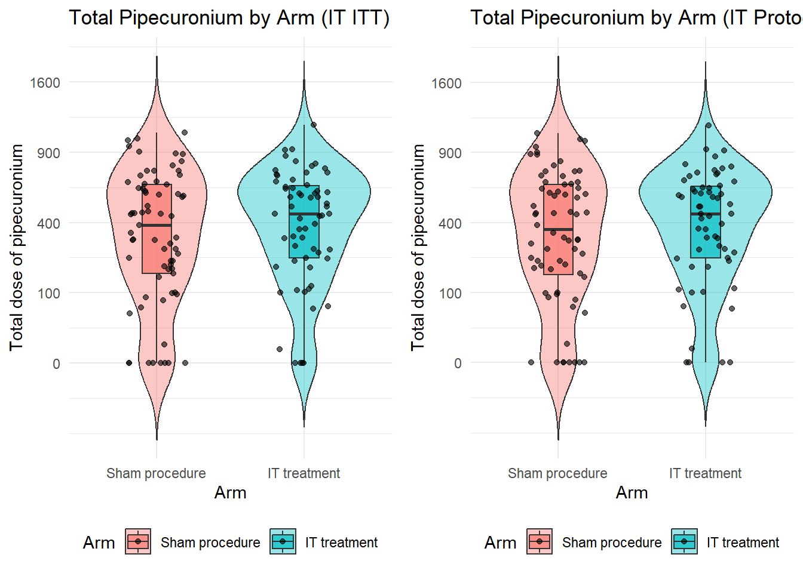

#load library
library(readxl)
library(dplyr)
library(data.table)
library(stringr)
library(ggplot2)
library(gtsummary)
library(Hmisc)
library(gt)
library(tidyr)
library(stats)Capstone Hint 1
Abstract
This capstone exercise adapted from the study Human versus equine intramuscular antitoxin, with or without human intrathecal antitoxin, for the treatment of adults with tetanus: a 2 × 2 factorial randomised controlled trial.
1. Load data
Import all the sheets in raw data 2-10-2020-_03TS_V1_Data.xls. Convert “UNKNOWN” value to NA, and “Y”/“N” to standard factorized “yes”/“no” which will be convenient as later gtsummary will automatically detect dichotomous variables.
Import raw data
# Define file path
daily_file_path <- here::here("data", "2-10-2020-_03TS_V1_Data.xls")
# Define sheets to import
sheets <- c(
"ENR",
"ADM",
"VENT",
"VENT_VENTILATION",
"VENT_TracheSupp",
"DAILY",
"DAILY_DAILY",
"COMP",
"FU",
"DAILY_FU",
"DAILY_FU_GridFU",
"S_AE"
)
# Read and store data in a named list
data_list <- lapply(sheets, function(sheet) {
df <- read_excel(daily_file_path, sheet = sheet)
# Replace "UNKNOWN" with NA, convert "Y"/"N" to "yes"/"no"
df <- df %>%
mutate(across(
where(is.character),
~ case_when(
.x == "Y" ~ "yes",
.x == "N" ~ "no",
.x == "UNKNOWN" ~ NA_character_,
TRUE ~ .x
)
)) %>%
mutate(across(
where( ~ all(.x %in% c("yes", "no", NA), na.rm = TRUE)),
~ factor(
.x,
levels = c("no", "yes"),
labels = c(0, 1),
exclude = NULL
)
)) # Ensure both levels exist
setNames(df, tolower(names(df)))
})
# Assign data frames to variables in the global environment
list2env(setNames(data_list, tolower(sheets)), envir = .GlobalEnv)<environment: R_GlobalEnv># another method
# for (sheet in sheets) {
# assign(tolower(sheet), read_excel(daily_file_path, sheet = sheet) %>%
# setNames(tolower(names(.))))
# }Import the allocation data of treatment arm 03TS_Randlist.xlsx and recode the values as being stated in the dictionary.
Import random allocation data
allocation_file_path <- here::here("data", "03TS_Randlist.xlsx")
# Read and process allocation data
allocation_data <- read_excel(allocation_file_path, sheet = "Allocation") %>%
setNames(tolower(names(.)))
randolist <- allocation_data %>% filter(row_number() %in% c(1:272)) %>%
rename(arm = r.arm) %>%
mutate(
pat.id = str_replace(pat.id, ".*-", ""),
usubjid = paste("003", pat.id, sep = "-"),
arm = case_when(
arm == "14 ampoules: TETANUS ANTITOXIN (IM) + 2 prefilled-syringes : TETAGAM®P (intrathecal))" ~ "equine and intrathecal",
arm == "14 ampoules: TETANUS ANTITOXIN (IM)" ~ "equine and sham",
arm == "12 prefilled-syringes : TETAGAM®P (IM) + 2 prefilled-syringes : TETAGAM®P (intrathecal))" ~ "human and intrathecal",
arm == "12 prefilled-syringes : TETAGAM®P (IM)" ~ "human and sham"
)
)Import the inclusion and exclusion data Protocol violations, exclusions, withdrawals.xlsx. Fix the inconsistency in sheet IM ITT which used id instead of usubjid.
Import inclusion and exclusion data
violations_file_path <- here::here("data", "Protocol violations, exclusions, withdrawals.xlsx")
# Import all sheets from the Protocol violations file
all_sheets <- excel_sheets(violations_file_path) # Get sheet names
violations_data <- lapply(all_sheets, function(sheet) {
data <- read_excel(violations_file_path, sheet = sheet)
colnames(data) <- tolower(colnames(data)) # Convert column names to lowercase
data
})New names:
• `` -> `...3`names(violations_data) <- all_sheets # Assign sheet names to the list
for (name in names(violations_data)) {
# Modify the name: make lowercase and replace spaces with underscores
modified_name <- gsub(" ", "_", tolower(name))
# Assign the data frame to the modified name
assign(modified_name, violations_data[[name]])
}
im_itt <- im_itt %>%
rename(usubjid = "id")Exclude all usubjid that were in pilot study and/or withdrew the consent.
Filter data
library(dplyr)
library(purrr)
Attaching package: 'purrr'The following object is masked from 'package:data.table':
transpose# Identify subjects to be excluded
excluded_subjects <- unique(c(pilot$usubjid, withdrawals$usubjid))
# List of dataset names
dataset_names <- c(
"vent",
"enr",
"adm",
"vent_ventilation",
"vent_trachesupp",
"daily",
"daily_daily",
"comp",
"fu",
"daily_fu",
"daily_fu_gridfu",
"s_ae"
)
# Apply filtering to all datasets and reassign them
filtered_datasets <- map(setNames(dataset_names, dataset_names), ~ {
get(.x) %>% filter(!usubjid %in% excluded_subjects)
})
# Assign filtered datasets back to their original names
list2env(filtered_datasets, envir = .GlobalEnv)<environment: R_GlobalEnv>Relabel variable and add units. So they will appear nicely in the table later. You might notice that I have created a new variable bmi here too. You could try to compute APACHE II score, SOFA score and Tetanus Severity Score too.
Baseline data
baseline_data <- enr %>%
select(-entry) %>%
left_join(adm, by = "usubjid") %>%
left_join(randolist %>% select(usubjid, arm), by = "usubjid")
baseline_data_raw <- upData(
baseline_data,
bmi = weight / ((height / 100) ^ 2),
#new variable derived from weight and height
labels = c(
age = "Age (years)",
icudays = "Days in ICU",
sex = "Sex",
weight = "Weight (kg)",
height = "Height (cm)",
bmi = "BMI (kg/m2)",
source = "Source",
tetanus = "Tetanus",
hypertension = "Hypertension",
myocardialinfart = "Myocardial infarction",
angina = "Angina",
perivascular = "Perivascular",
chronicpul = "Chronic pulmonary",
connectivetissue = "Connective tissue",
mildliver = "Mild liver",
hemiplegia = "Hemiplegia",
diawithchronic = "Diabetes with chronic",
severeliver = "Severe liver",
aids = "AIDS",
cardiacfailureiii = "Cardiac failure III",
cardiacfailureiv = "Cardiac failure IV",
cerebrovascular = "Cerebrovascular",
severeresp = "Severe respiratory",
pepticulcer = "Peptic ulcer",
diabetes = "Diabetes",
severekidney = "Severe kidney",
malignancy = "Malignancy",
tumour = "Tumour",
dementia = "Dementia",
comorbidityoth1 = "Other comorbidity 1",
comorbidityoth2 = "Other comorbidity 2",
electivesurgery = "Elective surgery",
emergencysurgery = "Emergency surgery",
timetoadm = "Duration of illness (days)",
incubationperiod = "Incubation period (days)",
incuperiodonset = "Period of onset (days)",
wound = "Wound",
diffbreath = "Difficulty breathing on admission",
ablettscore = "Ablett Score on admission",
asa = "ASA score",
maxtemp = "Maximum temperature during 1st day",
resp = "Respiratory rate",
fio2 = "FiO2",
spo2 = "SpO2",
pao2 = "PAO2",
ph = "PH",
plt = "Platelet count",
wbc = "White blood cell count",
hct = "Haematocrit",
maxhr = "Max HR",
minhr = "Min HR",
maxsbp = "Max SBP",
worstdbp = "Worst DBP",
worstsbp = "Worst SBP",
vaso = "Vasopressors",
bili = "Bilirubin",
na = "Sodium",
k = "Potassium",
creat = "Creatinine",
renalfailure = "Acute Renal Failure"
)
)Input object size: 360160 bytes; 112 variables 271 observations
Added variable bmi
New object size: 365688 bytes; 113 variables 271 observations2. Baseline table
When we write the code to create baseline tables for 5 different populations, we might notice that they are just repeated except for a first few filtering steps. Therefore, it’s good to wrap those repeated codes in a function to make our code neat and if we would like to make any changes, we just need to change at one place. This example is not optimal. Let’s think some ways to improve it based on what you have learnt in Rcafe course.
Wrap repeated code in a function
generate_baseline_summary <- function(baseline_data) {
library(dplyr)
library(gtsummary)
# Select relevant columns
baseline_data <- baseline_data %>%
select(usubjid, age, sex, bmi, source, tetanus, icudays, outcome, hypertension,
myocardialinfart, angina, perivascular, chronicpul, connectivetissue,
mildliver, hemiplegia, diawithchronic, severeliver, aids, cardiacfailureiii,
cerebrovascular, severeresp, pepticulcer, diabetes, severekidney, malignancy,
tumour, dementia, renalfailure, electivesurgery, emergencysurgery, timetoadm,
incubationperiod, incuperiodonset, wound, diffbreath, ablettscore, asa,
maxtemp, resp, fio2, spo2, pao2, ph, plt, wbc, hct, maxhr, minhr, maxsbp,
worstdbp, worstsbp, vaso, na, k, creat, Arm) %>%
as.data.frame(stringsAsFactors = FALSE)
# Identify factor variables, excluding "Arm"
factor_vars <- setdiff(names(baseline_data)[sapply(baseline_data, is.factor)], "Arm")
# Create a formula dynamically: c(var1, var2, ...) ~ "1"
value_formula <- as.formula(paste("c(", paste(factor_vars, collapse = ", "), ") ~ '1'"))
# Generate the summary table
baseline_table <- baseline_data %>%
select(-usubjid) %>%
tbl_summary(
by = Arm,
missing = "no", # Handle missing values
statistic = list(
all_continuous() ~ "{median} ({p25}, {p75})",
all_categorical() ~ "{n}/{N} ({p}%)"
),
digits = list(all_continuous() ~ 1),
type = list(fio2 ~ "continuous"),
value = value_formula # Apply "1" to all factor variables
) %>%
modify_header(label ~ "Variable") %>%
bold_labels()
return(baseline_table)
}Apply our generate_baseline_summary function to make tables for 5 different populations. Note how each population is filtered and grouped into treatment arms according to the Statistical analysis plan
Click to expand/collapse
# Prepare baseline data
baseline_data <- baseline_data_raw %>%
mutate(
Arm = recode(arm,
"equine and intrathecal" = 0,
"human and intrathecal" = 0,
"human and sham" = 1,
"equine and sham" = 1),
Arm = factor(Arm, levels = c(0,1), labels = c("Intrathecal treatment", "Sham procedure"))
)
generate_baseline_summary(baseline_data)| Variable | Intrathecal treatment N = 1361 |
Sham procedure N = 1351 |
|---|---|---|
| Age (years) | 46.0 (38.0, 57.0) | 50.0 (41.0, 60.0) |
| Sex | ||
| F | 22/136 (16%) | 22/135 (16%) |
| M | 114/136 (84%) | 113/135 (84%) |
| BMI (kg/m2) | 21.5 (19.9, 23.4) | 20.9 (19.5, 23.1) |
| Source | ||
| 1 | 33/136 (24%) | 28/135 (21%) |
| 2 | 103/136 (76%) | 107/135 (79%) |
| Tetanus | 136/136 (100%) | 135/135 (100%) |
| Days in ICU | 13.5 (8.0, 21.0) | 16.0 (8.0, 23.0) |
| outcome | ||
| 2 | 3/136 (2.2%) | 4/135 (3.0%) |
| 3 | 2/136 (1.5%) | 5/135 (3.7%) |
| 4 | 131/136 (96%) | 126/135 (93%) |
| Hypertension | 23/134 (17%) | 25/132 (19%) |
| Myocardial infarction | 1/134 (0.7%) | 0/134 (0%) |
| Angina | 0/134 (0%) | 0/135 (0%) |
| Perivascular | 0/134 (0%) | 1/133 (0.8%) |
| Chronic pulmonary | 1/134 (0.7%) | 6/134 (4.5%) |
| Connective tissue | 0/134 (0%) | 0/135 (0%) |
| Mild liver | 44/134 (33%) | 24/135 (18%) |
| Hemiplegia | 0/134 (0%) | 1/135 (0.7%) |
| Diabetes with chronic | 2/134 (1.5%) | 3/133 (2.3%) |
| Severe liver | 4/135 (3.0%) | 1/135 (0.7%) |
| AIDS | 0/135 (0%) | 0/135 (0%) |
| Cardiac failure III | 0/135 (0%) | 0/135 (0%) |
| Cerebrovascular | 2/134 (1.5%) | 3/135 (2.2%) |
| Severe respiratory | 0/135 (0%) | 0/135 (0%) |
| Peptic ulcer | 3/135 (2.2%) | 0/135 (0%) |
| Diabetes | 6/135 (4.4%) | 12/133 (9.0%) |
| Severe kidney | 3/135 (2.2%) | 3/135 (2.2%) |
| Malignancy | 1/135 (0.7%) | 1/135 (0.7%) |
| Tumour | 0/135 (0%) | 0/134 (0%) |
| Dementia | 1/135 (0.7%) | 0/135 (0%) |
| Acute Renal Failure | 2/136 (1.5%) | 2/135 (1.5%) |
| Elective surgery | 1/136 (0.7%) | 1/135 (0.7%) |
| Emergency surgery | 9/136 (6.6%) | 6/135 (4.4%) |
| Duration of illness (days) | 3.0 (2.0, 5.0) | 3.0 (2.0, 5.0) |
| Incubation period (days) | 8.0 (5.5, 14.0) | 9.0 (6.0, 14.0) |
| Period of onset (days) | 48.0 (24.0, 72.0) | 48.0 (24.0, 72.0) |
| Wound | ||
| 1 | 2/136 (1.5%) | 0/135 (0%) |
| 2 | 134/136 (99%) | 135/135 (100%) |
| Difficulty breathing on admission | 10/136 (7.4%) | 5/135 (3.7%) |
| Ablett Score on admission | ||
| I | 23/136 (17%) | 24/135 (18%) |
| II | 100/136 (74%) | 100/135 (74%) |
| III | 13/136 (9.6%) | 11/135 (8.1%) |
| ASA score | ||
| 1 | 74/136 (54%) | 74/135 (55%) |
| 2 | 56/136 (41%) | 49/135 (36%) |
| 3 | 6/136 (4.4%) | 12/135 (8.9%) |
| Maximum temperature during 1st day | 37.5 (37.4, 37.8) | 37.5 (37.0, 37.6) |
| Respiratory rate | 22.0 (20.0, 24.0) | 20.0 (20.0, 24.0) |
| FiO2 | 21.0 (21.0, 21.0) | 21.0 (21.0, 21.0) |
| SpO2 | 96.0 (95.0, 97.0) | 96.0 (95.0, 97.0) |
| PAO2 | 112.0 (98.0, 144.0) | 109.0 (98.0, 123.0) |
| PH | 7.4 (7.4, 7.5) | 7.4 (7.3, 7.5) |
| Platelet count | 285.5 (224.5, 335.0) | 274.0 (227.0, 321.0) |
| White blood cell count | 9.1 (7.5, 11.5) | 8.8 (7.4, 11.0) |
| Haematocrit | 41.9 (38.4, 44.0) | 41.0 (38.0, 44.0) |
| Max HR | 96.0 (88.0, 100.0) | 90.0 (82.0, 100.0) |
| Min HR | 80.0 (72.0, 88.0) | 72.0 (68.0, 84.0) |
| Max SBP | 140.0 (125.0, 150.0) | 140.0 (120.0, 150.0) |
| Worst DBP | 80.0 (80.0, 90.0) | 80.0 (80.0, 90.0) |
| Worst SBP | 140.0 (120.0, 150.0) | 130.0 (120.0, 150.0) |
| Vasopressors | 0/136 (0%) | 1/135 (0.7%) |
| Sodium | 139.0 (137.0, 141.0) | 139.0 (137.0, 141.0) |
| Potassium | 3.6 (3.4, 3.8) | 3.7 (3.5, 3.9) |
| Creatinine | 77.5 (66.0, 87.5) | 75.0 (65.0, 87.0) |
| 1 Median (Q1, Q3); n/N (%) | ||
Click to expand/collapse
baseline_data <- baseline_data_raw %>%
filter(!usubjid %in% im_itt$usubjid) %>%
mutate(
Arm=recode(arm, "equine and intrathecal" = 0,
"equine and sham" = 0,
"human and sham" = 1,
"human and intrathecal" = 1),
Arm=factor(Arm, levels=c(0,1), labels=c("Equine IM","Human IM"))
)
generate_baseline_summary(baseline_data)| Variable | Equine IM N = 1081 |
Human IM N = 1091 |
|---|---|---|
| Age (years) | 50.0 (40.5, 61.0) | 48.0 (39.0, 59.0) |
| Sex | ||
| F | 22/108 (20%) | 17/109 (16%) |
| M | 86/108 (80%) | 92/109 (84%) |
| BMI (kg/m2) | 21.6 (19.9, 23.4) | 20.9 (19.5, 22.8) |
| Source | ||
| 1 | 30/108 (28%) | 31/109 (28%) |
| 2 | 78/108 (72%) | 78/109 (72%) |
| Tetanus | 108/108 (100%) | 109/109 (100%) |
| Days in ICU | 12.5 (7.0, 22.0) | 14.0 (8.0, 22.0) |
| outcome | ||
| 2 | 4/108 (3.7%) | 2/109 (1.8%) |
| 3 | 3/108 (2.8%) | 3/109 (2.8%) |
| 4 | 101/108 (94%) | 104/109 (95%) |
| Hypertension | 21/107 (20%) | 20/106 (19%) |
| Myocardial infarction | 1/107 (0.9%) | 0/108 (0%) |
| Angina | 0/107 (0%) | 0/108 (0%) |
| Perivascular | 1/105 (1.0%) | 0/108 (0%) |
| Chronic pulmonary | 3/106 (2.8%) | 3/108 (2.8%) |
| Connective tissue | 0/107 (0%) | 0/108 (0%) |
| Mild liver | 26/107 (24%) | 31/108 (29%) |
| Hemiplegia | 0/107 (0%) | 1/108 (0.9%) |
| Diabetes with chronic | 3/106 (2.8%) | 2/108 (1.9%) |
| Severe liver | 4/107 (3.7%) | 0/109 (0%) |
| AIDS | 0/107 (0%) | 0/109 (0%) |
| Cardiac failure III | 0/107 (0%) | 0/109 (0%) |
| Cerebrovascular | 2/107 (1.9%) | 2/108 (1.9%) |
| Severe respiratory | 0/107 (0%) | 0/109 (0%) |
| Peptic ulcer | 2/107 (1.9%) | 1/109 (0.9%) |
| Diabetes | 11/106 (10%) | 4/109 (3.7%) |
| Severe kidney | 4/107 (3.7%) | 2/109 (1.8%) |
| Malignancy | 1/107 (0.9%) | 1/109 (0.9%) |
| Tumour | 0/106 (0%) | 0/109 (0%) |
| Dementia | 0/107 (0%) | 1/109 (0.9%) |
| Acute Renal Failure | 4/108 (3.7%) | 0/109 (0%) |
| Elective surgery | 1/108 (0.9%) | 0/109 (0%) |
| Emergency surgery | 7/108 (6.5%) | 6/109 (5.5%) |
| Duration of illness (days) | 3.0 (2.5, 5.0) | 3.0 (2.0, 6.0) |
| Incubation period (days) | 8.0 (6.0, 14.0) | 8.0 (5.0, 12.0) |
| Period of onset (days) | 48.0 (24.0, 72.0) | 48.0 (24.0, 72.0) |
| Wound | ||
| 1 | 1/108 (0.9%) | 1/109 (0.9%) |
| 2 | 107/108 (99%) | 108/109 (99%) |
| Difficulty breathing on admission | 6/108 (5.6%) | 5/109 (4.6%) |
| Ablett Score on admission | ||
| I | 22/108 (20%) | 21/109 (19%) |
| II | 79/108 (73%) | 77/109 (71%) |
| III | 7/108 (6.5%) | 11/109 (10%) |
| ASA score | ||
| 1 | 61/108 (56%) | 53/109 (49%) |
| 2 | 37/108 (34%) | 52/109 (48%) |
| 3 | 10/108 (9.3%) | 4/109 (3.7%) |
| Maximum temperature during 1st day | 37.5 (37.1, 37.6) | 37.5 (37.4, 37.6) |
| Respiratory rate | 20.0 (20.0, 23.5) | 22.0 (20.0, 24.0) |
| FiO2 | 21.0 (21.0, 21.0) | 21.0 (21.0, 21.0) |
| SpO2 | 96.5 (96.0, 97.0) | 96.0 (95.0, 97.0) |
| PAO2 | 107.0 (79.0, 144.0) | 120.0 (101.0, 144.0) |
| PH | 7.5 (7.3, 7.5) | 7.4 (7.4, 7.5) |
| Platelet count | 276.0 (228.5, 325.5) | 274.0 (217.0, 322.0) |
| White blood cell count | 8.7 (7.3, 11.5) | 8.8 (7.2, 10.9) |
| Haematocrit | 41.3 (37.9, 44.0) | 42.0 (39.0, 44.4) |
| Max HR | 92.0 (85.0, 100.0) | 92.0 (86.0, 104.0) |
| Min HR | 76.0 (68.0, 84.0) | 76.0 (70.0, 88.0) |
| Max SBP | 140.0 (120.0, 150.0) | 140.0 (130.0, 150.0) |
| Worst DBP | 80.0 (80.0, 90.0) | 80.0 (80.0, 90.0) |
| Worst SBP | 140.0 (120.0, 150.0) | 140.0 (120.0, 150.0) |
| Vasopressors | 0/108 (0%) | 1/109 (0.9%) |
| Sodium | 139.0 (137.0, 141.0) | 139.0 (137.0, 141.0) |
| Potassium | 3.7 (3.4, 3.9) | 3.7 (3.4, 3.9) |
| Creatinine | 80.0 (66.0, 89.0) | 75.0 (65.0, 86.0) |
| 1 Median (Q1, Q3); n/N (%) | ||
Click to expand/collapse
baseline_data <- baseline_data_raw %>%
filter(!usubjid %in% it_per_protocol$usubjid) %>%
mutate(
Arm = recode(arm,
"equine and intrathecal" = 0,
"human and intrathecal" = 0,
"human and sham" = 1,
"equine and sham" = 1),
Arm = factor(Arm, levels = c(0,1), labels = c("Intrathecal treatment", "Sham procedure"))
)
generate_baseline_summary(baseline_data)| Variable | Intrathecal treatment N = 1321 |
Sham procedure N = 1321 |
|---|---|---|
| Age (years) | 46.0 (38.0, 58.0) | 51.5 (41.0, 60.0) |
| Sex | ||
| F | 22/132 (17%) | 22/132 (17%) |
| M | 110/132 (83%) | 110/132 (83%) |
| BMI (kg/m2) | 21.4 (19.9, 23.3) | 20.9 (19.5, 23.1) |
| Source | ||
| 1 | 32/132 (24%) | 27/132 (20%) |
| 2 | 100/132 (76%) | 105/132 (80%) |
| Tetanus | 132/132 (100%) | 132/132 (100%) |
| Days in ICU | 13.0 (8.0, 21.0) | 16.0 (8.0, 23.0) |
| outcome | ||
| 2 | 2/132 (1.5%) | 4/132 (3.0%) |
| 3 | 2/132 (1.5%) | 5/132 (3.8%) |
| 4 | 128/132 (97%) | 123/132 (93%) |
| Hypertension | 23/130 (18%) | 25/129 (19%) |
| Myocardial infarction | 1/130 (0.8%) | 0/131 (0%) |
| Angina | 0/130 (0%) | 0/132 (0%) |
| Perivascular | 0/130 (0%) | 1/130 (0.8%) |
| Chronic pulmonary | 1/130 (0.8%) | 6/131 (4.6%) |
| Connective tissue | 0/130 (0%) | 0/132 (0%) |
| Mild liver | 41/130 (32%) | 24/132 (18%) |
| Hemiplegia | 0/130 (0%) | 1/132 (0.8%) |
| Diabetes with chronic | 2/130 (1.5%) | 3/130 (2.3%) |
| Severe liver | 4/131 (3.1%) | 1/132 (0.8%) |
| AIDS | 0/131 (0%) | 0/132 (0%) |
| Cardiac failure III | 0/131 (0%) | 0/132 (0%) |
| Cerebrovascular | 2/130 (1.5%) | 3/132 (2.3%) |
| Severe respiratory | 0/131 (0%) | 0/132 (0%) |
| Peptic ulcer | 3/131 (2.3%) | 0/132 (0%) |
| Diabetes | 6/131 (4.6%) | 12/130 (9.2%) |
| Severe kidney | 3/131 (2.3%) | 3/132 (2.3%) |
| Malignancy | 1/131 (0.8%) | 1/132 (0.8%) |
| Tumour | 0/131 (0%) | 0/131 (0%) |
| Dementia | 1/131 (0.8%) | 0/132 (0%) |
| Acute Renal Failure | 2/132 (1.5%) | 2/132 (1.5%) |
| Elective surgery | 1/132 (0.8%) | 1/132 (0.8%) |
| Emergency surgery | 8/132 (6.1%) | 6/132 (4.5%) |
| Duration of illness (days) | 3.0 (2.0, 5.0) | 3.0 (2.0, 5.0) |
| Incubation period (days) | 8.0 (5.0, 13.5) | 9.0 (6.0, 14.0) |
| Period of onset (days) | 48.0 (24.0, 72.0) | 48.0 (24.0, 72.0) |
| Wound | ||
| 1 | 2/132 (1.5%) | 0/132 (0%) |
| 2 | 130/132 (98%) | 132/132 (100%) |
| Difficulty breathing on admission | 9/132 (6.8%) | 5/132 (3.8%) |
| Ablett Score on admission | ||
| I | 23/132 (17%) | 24/132 (18%) |
| II | 97/132 (73%) | 97/132 (73%) |
| III | 12/132 (9.1%) | 11/132 (8.3%) |
| ASA score | ||
| 1 | 72/132 (55%) | 72/132 (55%) |
| 2 | 54/132 (41%) | 48/132 (36%) |
| 3 | 6/132 (4.5%) | 12/132 (9.1%) |
| Maximum temperature during 1st day | 37.5 (37.4, 37.7) | 37.5 (37.0, 37.6) |
| Respiratory rate | 22.0 (20.0, 24.0) | 20.0 (20.0, 24.0) |
| FiO2 | 21.0 (21.0, 21.0) | 21.0 (21.0, 21.0) |
| SpO2 | 96.0 (95.0, 97.0) | 96.0 (95.0, 97.0) |
| PAO2 | 110.0 (98.0, 144.0) | 109.0 (98.0, 123.0) |
| PH | 7.5 (7.4, 7.5) | 7.4 (7.3, 7.5) |
| Platelet count | 280.0 (223.5, 334.0) | 274.0 (229.0, 322.0) |
| White blood cell count | 9.0 (7.5, 11.5) | 8.9 (7.4, 11.0) |
| Haematocrit | 41.9 (38.4, 44.0) | 41.1 (38.0, 44.0) |
| Max HR | 96.0 (88.0, 100.0) | 90.0 (83.0, 100.0) |
| Min HR | 80.0 (72.0, 88.0) | 72.0 (68.0, 84.0) |
| Max SBP | 140.0 (120.0, 150.0) | 140.0 (120.0, 150.0) |
| Worst DBP | 80.0 (80.0, 90.0) | 80.0 (80.0, 90.0) |
| Worst SBP | 140.0 (120.0, 150.0) | 135.0 (120.0, 150.0) |
| Vasopressors | 0/132 (0%) | 1/132 (0.8%) |
| Sodium | 139.0 (137.0, 141.0) | 139.0 (137.0, 141.0) |
| Potassium | 3.6 (3.4, 3.8) | 3.7 (3.5, 3.9) |
| Creatinine | 77.0 (66.0, 88.0) | 75.0 (65.0, 86.0) |
| 1 Median (Q1, Q3); n/N (%) | ||
Click to expand/collapse
baseline_data <- baseline_data_raw %>%
filter(!usubjid %in% im_per_protocol$usubjid) %>%
mutate(
Arm=recode(arm,
"equine and intrathecal" = 0,
"equine and sham" = 0,
"human and sham" = 1,
"human and intrathecal" = 1),
Arm=factor(Arm, levels=c(0,1), labels=c("Equine IM","Human IM"))
)
generate_baseline_summary(baseline_data)| Variable | Equine IM N = 1061 |
Human IM N = 1091 |
|---|---|---|
| Age (years) | 50.0 (41.0, 61.0) | 48.0 (39.0, 59.0) |
| Sex | ||
| F | 22/106 (21%) | 17/109 (16%) |
| M | 84/106 (79%) | 92/109 (84%) |
| BMI (kg/m2) | 21.6 (19.8, 23.4) | 20.9 (19.5, 22.8) |
| Source | ||
| 1 | 30/106 (28%) | 31/109 (28%) |
| 2 | 76/106 (72%) | 78/109 (72%) |
| Tetanus | 106/106 (100%) | 109/109 (100%) |
| Days in ICU | 12.5 (7.0, 22.0) | 14.0 (8.0, 22.0) |
| outcome | ||
| 2 | 4/106 (3.8%) | 2/109 (1.8%) |
| 3 | 3/106 (2.8%) | 3/109 (2.8%) |
| 4 | 99/106 (93%) | 104/109 (95%) |
| Hypertension | 21/105 (20%) | 20/106 (19%) |
| Myocardial infarction | 1/105 (1.0%) | 0/108 (0%) |
| Angina | 0/105 (0%) | 0/108 (0%) |
| Perivascular | 1/103 (1.0%) | 0/108 (0%) |
| Chronic pulmonary | 3/104 (2.9%) | 3/108 (2.8%) |
| Connective tissue | 0/105 (0%) | 0/108 (0%) |
| Mild liver | 26/105 (25%) | 31/108 (29%) |
| Hemiplegia | 0/105 (0%) | 1/108 (0.9%) |
| Diabetes with chronic | 3/104 (2.9%) | 2/108 (1.9%) |
| Severe liver | 4/105 (3.8%) | 0/109 (0%) |
| AIDS | 0/105 (0%) | 0/109 (0%) |
| Cardiac failure III | 0/105 (0%) | 0/109 (0%) |
| Cerebrovascular | 2/105 (1.9%) | 2/108 (1.9%) |
| Severe respiratory | 0/105 (0%) | 0/109 (0%) |
| Peptic ulcer | 2/105 (1.9%) | 1/109 (0.9%) |
| Diabetes | 11/104 (11%) | 4/109 (3.7%) |
| Severe kidney | 4/105 (3.8%) | 2/109 (1.8%) |
| Malignancy | 1/105 (1.0%) | 1/109 (0.9%) |
| Tumour | 0/104 (0%) | 0/109 (0%) |
| Dementia | 0/105 (0%) | 1/109 (0.9%) |
| Acute Renal Failure | 4/106 (3.8%) | 0/109 (0%) |
| Elective surgery | 1/106 (0.9%) | 0/109 (0%) |
| Emergency surgery | 7/106 (6.6%) | 6/109 (5.5%) |
| Duration of illness (days) | 3.0 (2.0, 5.0) | 3.0 (2.0, 6.0) |
| Incubation period (days) | 8.0 (6.0, 13.0) | 8.0 (5.0, 12.0) |
| Period of onset (days) | 48.0 (24.0, 72.0) | 48.0 (24.0, 72.0) |
| Wound | ||
| 1 | 1/106 (0.9%) | 1/109 (0.9%) |
| 2 | 105/106 (99%) | 108/109 (99%) |
| Difficulty breathing on admission | 6/106 (5.7%) | 5/109 (4.6%) |
| Ablett Score on admission | ||
| I | 22/106 (21%) | 21/109 (19%) |
| II | 77/106 (73%) | 77/109 (71%) |
| III | 7/106 (6.6%) | 11/109 (10%) |
| ASA score | ||
| 1 | 60/106 (57%) | 53/109 (49%) |
| 2 | 36/106 (34%) | 52/109 (48%) |
| 3 | 10/106 (9.4%) | 4/109 (3.7%) |
| Maximum temperature during 1st day | 37.5 (37.1, 37.6) | 37.5 (37.4, 37.6) |
| Respiratory rate | 20.0 (20.0, 24.0) | 22.0 (20.0, 24.0) |
| FiO2 | 21.0 (21.0, 21.0) | 21.0 (21.0, 21.0) |
| SpO2 | 96.0 (96.0, 97.0) | 96.0 (95.0, 97.0) |
| PAO2 | 107.0 (79.0, 144.0) | 120.0 (101.0, 144.0) |
| PH | 7.5 (7.3, 7.5) | 7.4 (7.4, 7.5) |
| Platelet count | 279.5 (230.0, 326.0) | 274.0 (217.0, 322.0) |
| White blood cell count | 8.8 (7.3, 11.5) | 8.8 (7.2, 10.9) |
| Haematocrit | 41.3 (37.9, 44.0) | 42.0 (39.0, 44.4) |
| Max HR | 92.0 (86.0, 100.0) | 92.0 (86.0, 104.0) |
| Min HR | 76.0 (68.0, 84.0) | 76.0 (70.0, 88.0) |
| Max SBP | 140.0 (120.0, 150.0) | 140.0 (130.0, 150.0) |
| Worst DBP | 80.0 (80.0, 90.0) | 80.0 (80.0, 90.0) |
| Worst SBP | 140.0 (120.0, 150.0) | 140.0 (120.0, 150.0) |
| Vasopressors | 0/106 (0%) | 1/109 (0.9%) |
| Sodium | 139.0 (137.0, 141.0) | 139.0 (137.0, 141.0) |
| Potassium | 3.7 (3.4, 3.9) | 3.7 (3.4, 3.9) |
| Creatinine | 80.0 (66.0, 88.0) | 75.0 (65.0, 86.0) |
| 1 Median (Q1, Q3); n/N (%) | ||
Click to expand/collapse
baseline_data <- baseline_data_raw %>%
mutate(
Arm = recode(
arm,
"equine and intrathecal" = 0,
"equine and sham" = 0,
"human and sham" = 1,
"human and intrathecal" = 1
),
Arm = ifelse(prehtig == 1, 2, Arm),
Arm = factor(
Arm,
levels = c(0, 1, 2),
labels = c("Equine IM", "Human IM", "Equine IM pre hospital")
)
)
generate_baseline_summary(baseline_data)| Variable | Equine IM N = 1081 |
Human IM N = 1091 |
Equine IM pre hospital N = 541 |
|---|---|---|---|
| Age (years) | 50.0 (40.5, 61.0) | 48.0 (39.0, 59.0) | 48.5 (39.0, 56.0) |
| Sex | |||
| F | 22/108 (20%) | 17/109 (16%) | 5/54 (9.3%) |
| M | 86/108 (80%) | 92/109 (84%) | 49/54 (91%) |
| BMI (kg/m2) | 21.6 (19.9, 23.4) | 20.9 (19.5, 22.8) | 21.5 (20.2, 23.5) |
| Source | |||
| 1 | 30/108 (28%) | 31/109 (28%) | 0/54 (0%) |
| 2 | 78/108 (72%) | 78/109 (72%) | 54/54 (100%) |
| Tetanus | 108/108 (100%) | 109/109 (100%) | 54/54 (100%) |
| Days in ICU | 12.5 (7.0, 22.0) | 14.0 (8.0, 22.0) | 17.5 (12.0, 23.0) |
| outcome | |||
| 2 | 4/108 (3.7%) | 2/109 (1.8%) | 1/54 (1.9%) |
| 3 | 3/108 (2.8%) | 3/109 (2.8%) | 1/54 (1.9%) |
| 4 | 101/108 (94%) | 104/109 (95%) | 52/54 (96%) |
| Hypertension | 21/107 (20%) | 20/106 (19%) | 7/53 (13%) |
| Myocardial infarction | 1/107 (0.9%) | 0/108 (0%) | 0/53 (0%) |
| Angina | 0/107 (0%) | 0/108 (0%) | 0/54 (0%) |
| Perivascular | 1/105 (1.0%) | 0/108 (0%) | 0/54 (0%) |
| Chronic pulmonary | 3/106 (2.8%) | 3/108 (2.8%) | 1/54 (1.9%) |
| Connective tissue | 0/107 (0%) | 0/108 (0%) | 0/54 (0%) |
| Mild liver | 26/107 (24%) | 31/108 (29%) | 11/54 (20%) |
| Hemiplegia | 0/107 (0%) | 1/108 (0.9%) | 0/54 (0%) |
| Diabetes with chronic | 3/106 (2.8%) | 2/108 (1.9%) | 0/53 (0%) |
| Severe liver | 4/107 (3.7%) | 0/109 (0%) | 1/54 (1.9%) |
| AIDS | 0/107 (0%) | 0/109 (0%) | 0/54 (0%) |
| Cardiac failure III | 0/107 (0%) | 0/109 (0%) | 0/54 (0%) |
| Cerebrovascular | 2/107 (1.9%) | 2/108 (1.9%) | 1/54 (1.9%) |
| Severe respiratory | 0/107 (0%) | 0/109 (0%) | 0/54 (0%) |
| Peptic ulcer | 2/107 (1.9%) | 1/109 (0.9%) | 0/54 (0%) |
| Diabetes | 11/106 (10%) | 4/109 (3.7%) | 3/53 (5.7%) |
| Severe kidney | 4/107 (3.7%) | 2/109 (1.8%) | 0/54 (0%) |
| Malignancy | 1/107 (0.9%) | 1/109 (0.9%) | 0/54 (0%) |
| Tumour | 0/106 (0%) | 0/109 (0%) | 0/54 (0%) |
| Dementia | 0/107 (0%) | 1/109 (0.9%) | 0/54 (0%) |
| Acute Renal Failure | 4/108 (3.7%) | 0/109 (0%) | 0/54 (0%) |
| Elective surgery | 1/108 (0.9%) | 0/109 (0%) | 1/54 (1.9%) |
| Emergency surgery | 7/108 (6.5%) | 6/109 (5.5%) | 2/54 (3.7%) |
| Duration of illness (days) | 3.0 (2.5, 5.0) | 3.0 (2.0, 6.0) | 3.0 (2.0, 4.0) |
| Incubation period (days) | 8.0 (6.0, 14.0) | 8.0 (5.0, 12.0) | 10.0 (6.0, 14.0) |
| Period of onset (days) | 48.0 (24.0, 72.0) | 48.0 (24.0, 72.0) | 48.0 (24.0, 92.0) |
| Wound | |||
| 1 | 1/108 (0.9%) | 1/109 (0.9%) | 0/54 (0%) |
| 2 | 107/108 (99%) | 108/109 (99%) | 54/54 (100%) |
| Difficulty breathing on admission | 6/108 (5.6%) | 5/109 (4.6%) | 4/54 (7.4%) |
| Ablett Score on admission | |||
| I | 22/108 (20%) | 21/109 (19%) | 4/54 (7.4%) |
| II | 79/108 (73%) | 77/109 (71%) | 44/54 (81%) |
| III | 7/108 (6.5%) | 11/109 (10%) | 6/54 (11%) |
| ASA score | |||
| 1 | 61/108 (56%) | 53/109 (49%) | 34/54 (63%) |
| 2 | 37/108 (34%) | 52/109 (48%) | 16/54 (30%) |
| 3 | 10/108 (9.3%) | 4/109 (3.7%) | 4/54 (7.4%) |
| Maximum temperature during 1st day | 37.5 (37.1, 37.6) | 37.5 (37.4, 37.6) | 37.4 (37.0, 37.6) |
| Respiratory rate | 20.0 (20.0, 23.5) | 22.0 (20.0, 24.0) | 22.0 (20.0, 24.0) |
| FiO2 | 21.0 (21.0, 21.0) | 21.0 (21.0, 21.0) | 21.0 (21.0, 21.0) |
| SpO2 | 96.5 (96.0, 97.0) | 96.0 (95.0, 97.0) | 96.0 (95.0, 97.0) |
| PAO2 | 107.0 (79.0, 144.0) | 120.0 (101.0, 144.0) | 105.0 (98.0, 127.0) |
| PH | 7.5 (7.3, 7.5) | 7.4 (7.4, 7.5) | 7.4 (7.3, 7.5) |
| Platelet count | 276.0 (228.5, 325.5) | 274.0 (217.0, 322.0) | 293.5 (246.0, 346.0) |
| White blood cell count | 8.7 (7.3, 11.5) | 8.8 (7.2, 10.9) | 9.8 (8.2, 11.2) |
| Haematocrit | 41.3 (37.9, 44.0) | 42.0 (39.0, 44.4) | 41.0 (38.0, 42.8) |
| Max HR | 92.0 (85.0, 100.0) | 92.0 (86.0, 104.0) | 93.0 (80.0, 100.0) |
| Min HR | 76.0 (68.0, 84.0) | 76.0 (70.0, 88.0) | 76.0 (68.0, 84.0) |
| Max SBP | 140.0 (120.0, 150.0) | 140.0 (130.0, 150.0) | 130.0 (120.0, 150.0) |
| Worst DBP | 80.0 (80.0, 90.0) | 80.0 (80.0, 90.0) | 80.0 (80.0, 90.0) |
| Worst SBP | 140.0 (120.0, 150.0) | 140.0 (120.0, 150.0) | 130.0 (120.0, 150.0) |
| Vasopressors | 0/108 (0%) | 1/109 (0.9%) | 0/54 (0%) |
| Sodium | 139.0 (137.0, 141.0) | 139.0 (137.0, 141.0) | 139.0 (137.0, 141.0) |
| Potassium | 3.7 (3.4, 3.9) | 3.7 (3.4, 3.9) | 3.6 (3.4, 3.8) |
| Creatinine | 80.0 (66.0, 89.0) | 75.0 (65.0, 86.0) | 74.0 (63.0, 82.0) |
| 1 Median (Q1, Q3); n/N (%) | |||
3. Compute Apache II score
The appendix of how Tetanus Severity, SOFA, APACHE II calculated is available here
Prepare data for Apache II scoring
## Calculate scores
### Create the data table for apache.ii
apache.ii_data <-
adm %>% select(usubjid, maxtemp, gcs, resp, fio2, spo2, pao2, ph, plt, wbc, hct, maxhr, minhr, maxsbp, worstsbp, worstdbp, bili, na, k, creat, electivesurgery, emergencysurgery, immunocompromised, severeresp, cardiacfailureiv, diawithchronic, severeliver) %>%
left_join(enr, by="usubjid") %>% select (usubjid, age, randtc, maxtemp, gcs, resp, fio2, spo2, pao2, ph, plt, wbc, hct, maxhr, minhr, maxsbp, worstsbp, worstdbp, bili, na, k, creat, electivesurgery, emergencysurgery, immunocompromised, severeresp, cardiacfailureiv, diawithchronic, severeliver) %>%
mutate(
temp = structure(maxtemp, label="Maximum temperature during 1st day"),
worstdbp = structure(worstdbp, label="Worst DBP"),
worstsbp = structure(worstsbp, label="Worst SBP"),
rr = structure(resp, label="Respiratory rate"),
fio2 = structure(fio2, label="FiO2"),
spo2 = structure(spo2, label="SpO2"),
pao2 = structure(pao2, label="PAO2"),
ph = structure(ph, label="PH"),
plt = structure(plt, label="Platelet count"),
wbc = structure(wbc, label="White blood cell count"),
hct = structure(hct, label="Haematorcrit"),
hr = pmax(maxhr, minhr),
hr = structure(hr, label="HR"),
maxsbp = structure(maxsbp, label="Max SBP"),
sodium = structure(na, label="Sodium"),
potassium = structure(k, label="Potassium"),
creatinine = structure(creat, label="Creatinine"),
map = worstdbp + (worstsbp-worstdbp)/3,
map = structure(map, label="Mean Arterial Pressure"),
gcs = structure(gcs, label="GCS"),
age = structure(age, label="Age", unit="years"),
elective = electivesurgery,
emergency = emergencysurgery,
chronic = case_when(
immunocompromised == "1" ~ 1,
severeresp == "1" ~ 1,
cardiacfailureiv == "1" ~ 1,
diawithchronic == "1" ~ 1,
severeliver == "1" ~ 1,
TRUE ~ 0
)
,
chronic = factor(chronic, levels=c(0,1), labels=c("0","1"))
) %>%
select(usubjid, temp, map, hr, rr, fio2, pao2, ph, sodium, potassium, creatinine, hct, wbc, gcs, age, elective, emergency, chronic)Write function to compute Apache II score
calculate_apache_ii <- function(data) {
data <- data %>%
mutate(
temp_score = case_when(
temp >= 41 ~ 4,
temp >= 39 ~ 3,
temp >= 38.5 ~ 1,
TRUE ~ 0
),
map_score = case_when(
map >= 160 | map < 40 ~ 4,
map >= 130 | map < 50 ~ 3,
map >= 110 | map < 70 ~ 2,
TRUE ~ 0
),
hr_score = case_when(
hr >= 180 | hr < 40 ~ 4,
hr >= 140 | hr < 55 ~ 3,
hr >= 110 | hr < 70 ~ 2,
TRUE ~ 0
),
rr_score = case_when(
rr >= 50 | rr < 6 ~ 4,
rr >= 35 ~ 3,
rr < 10 ~ 2,
rr >= 25 | rr < 12 ~ 1,
TRUE ~ 0
),
pao2_score = case_when(
fio2 > 50 ~ 0,
pao2 < 55 ~ 4,
pao2 <= 60 ~ 2,
pao2 <= 70 ~ 1,
TRUE ~ 0
),
ph_score = case_when(
ph >= 7.7 | ph < 7.15 ~ 4,
ph >= 7.6 | ph < 7.25 ~ 3,
ph < 7.33 ~ 2,
ph >= 7.5 ~ 1,
TRUE ~ 0
),
sodium_score = case_when(
sodium >= 180 | sodium <= 110 ~ 4,
sodium >= 160 | sodium < 120 ~ 3,
sodium >= 155 | sodium < 130 ~ 2,
sodium >= 150 ~ 1,
TRUE ~ 0
),
potassium_score = case_when(
potassium >= 7 | potassium < 2.5 ~ 4,
potassium >= 6 ~ 3,
potassium < 3 ~ 2,
potassium >= 5.5 | potassium < 3.5 ~ 1,
TRUE ~ 0
),
creatinine_score = case_when(
creatinine >= 210 ~ 4,
creatinine >= 178 ~ 3,
creatinine >= 133 | creatinine < 54 ~ 2,
TRUE ~ 0
),
hct_score = case_when(
hct >= 60 | hct < 20 ~ 4,
hct >= 50 | hct < 30 ~ 2,
hct >= 46 ~ 1,
TRUE ~ 0
),
wbc_score = case_when(
wbc >= 40 | wbc < 1 ~ 4,
wbc >= 20 | wbc < 3 ~ 2,
wbc >= 15 ~ 1,
TRUE ~ 0
),
gcs_score = 15 - gcs,
age_score = case_when(
age >= 75 ~ 6,
age >= 65 ~ 5,
age >= 55 ~ 3,
age >= 45 ~ 2,
TRUE ~ 0
),
elective_score = case_when(
elective == "1" ~ 5,
TRUE ~ 0
),
emergency_score = case_when(
emergency == "1" ~ 5,
TRUE ~ 0
),
chronic_score = case_when(
chronic == "1" ~ 5,
TRUE ~ 0
),
apache_ii_score = temp_score + map_score + hr_score + rr_score +
pao2_score + ph_score + sodium_score + potassium_score + creatinine_score +
hct_score + wbc_score + gcs_score + age_score + elective_score + emergency_score + chronic_score,
apache_ii_score = structure(apache_ii_score, label = "Apache II score")
)
return(data)
}
Apply the calculate_apache_ii to apache.ii_data and update the score to baseline_data_raw
apache.ii.score <- calculate_apache_ii(apache.ii_data)
baseline_data_raw <- baseline_data_raw %>% left_join(apache.ii.score %>% select(usubjid, apache_ii_score), by = "usubjid")Because we has wrapped the repeated code to create baseline table into generate_baseline_summary function, we just need to add the apache_ii_score variable in the select part of generate_baseline_summary once and then apply it to our subset data.
Update generate_baseline_summary function
generate_baseline_summary <- function(baseline_data) {
library(dplyr)
library(gtsummary)
# Select relevant columns
baseline_data <- baseline_data %>%
select(usubjid, age, sex, bmi, source, tetanus, icudays, outcome, hypertension,
myocardialinfart, angina, perivascular, chronicpul, connectivetissue,
mildliver, hemiplegia, diawithchronic, severeliver, aids, cardiacfailureiii,
cerebrovascular, severeresp, pepticulcer, diabetes, severekidney, malignancy,
tumour, dementia, renalfailure, electivesurgery, emergencysurgery, timetoadm,
incubationperiod, incuperiodonset, wound, diffbreath, ablettscore, asa,
maxtemp, resp, fio2, spo2, pao2, ph, plt, wbc, hct, maxhr, minhr, maxsbp,
worstdbp, worstsbp, vaso, na, k, creat, apache_ii_score, Arm) %>% #add apache_ii_score
as.data.frame(stringsAsFactors = FALSE)
# Identify factor variables, excluding "Arm"
factor_vars <- setdiff(names(baseline_data)[sapply(baseline_data, is.factor)], "Arm")
# Create a formula dynamically: c(var1, var2, ...) ~ "1"
value_formula <- as.formula(paste("c(", paste(factor_vars, collapse = ", "), ") ~ '1'"))
# Generate the summary table
baseline_table <- baseline_data %>%
select(-usubjid) %>%
tbl_summary(
by = Arm,
missing = "no", # Handle missing values
statistic = list(
all_continuous() ~ "{median} ({p25}, {p75})",
all_categorical() ~ "{n}/{N} ({p}%)"
),
digits = list(all_continuous() ~ 1),
type = list(fio2 ~ "continuous"),
value = value_formula # Apply "1" to all factor variables
) %>%
modify_header(label ~ "Variable") %>%
bold_labels()
return(baseline_table)
}If we repeat our codes, we have to repeat our changes too. However, if we wrap them in a function, we only need to make changes in that function.
Click to expand/collapse
# Prepare baseline data
baseline_data <- baseline_data_raw %>%
mutate(
Arm = recode(arm,
"equine and intrathecal" = 0,
"human and intrathecal" = 0,
"human and sham" = 1,
"equine and sham" = 1),
Arm = factor(Arm, levels = c(0,1), labels = c("Intrathecal treatment", "Sham procedure"))
)
generate_baseline_summary(baseline_data)| Variable | Intrathecal treatment N = 1361 |
Sham procedure N = 1351 |
|---|---|---|
| Age (years) | 46.0 (38.0, 57.0) | 50.0 (41.0, 60.0) |
| Sex | ||
| F | 22/136 (16%) | 22/135 (16%) |
| M | 114/136 (84%) | 113/135 (84%) |
| BMI (kg/m2) | 21.5 (19.9, 23.4) | 20.9 (19.5, 23.1) |
| Source | ||
| 1 | 33/136 (24%) | 28/135 (21%) |
| 2 | 103/136 (76%) | 107/135 (79%) |
| Tetanus | 136/136 (100%) | 135/135 (100%) |
| Days in ICU | 13.5 (8.0, 21.0) | 16.0 (8.0, 23.0) |
| outcome | ||
| 2 | 3/136 (2.2%) | 4/135 (3.0%) |
| 3 | 2/136 (1.5%) | 5/135 (3.7%) |
| 4 | 131/136 (96%) | 126/135 (93%) |
| Hypertension | 23/134 (17%) | 25/132 (19%) |
| Myocardial infarction | 1/134 (0.7%) | 0/134 (0%) |
| Angina | 0/134 (0%) | 0/135 (0%) |
| Perivascular | 0/134 (0%) | 1/133 (0.8%) |
| Chronic pulmonary | 1/134 (0.7%) | 6/134 (4.5%) |
| Connective tissue | 0/134 (0%) | 0/135 (0%) |
| Mild liver | 44/134 (33%) | 24/135 (18%) |
| Hemiplegia | 0/134 (0%) | 1/135 (0.7%) |
| Diabetes with chronic | 2/134 (1.5%) | 3/133 (2.3%) |
| Severe liver | 4/135 (3.0%) | 1/135 (0.7%) |
| AIDS | 0/135 (0%) | 0/135 (0%) |
| Cardiac failure III | 0/135 (0%) | 0/135 (0%) |
| Cerebrovascular | 2/134 (1.5%) | 3/135 (2.2%) |
| Severe respiratory | 0/135 (0%) | 0/135 (0%) |
| Peptic ulcer | 3/135 (2.2%) | 0/135 (0%) |
| Diabetes | 6/135 (4.4%) | 12/133 (9.0%) |
| Severe kidney | 3/135 (2.2%) | 3/135 (2.2%) |
| Malignancy | 1/135 (0.7%) | 1/135 (0.7%) |
| Tumour | 0/135 (0%) | 0/134 (0%) |
| Dementia | 1/135 (0.7%) | 0/135 (0%) |
| Acute Renal Failure | 2/136 (1.5%) | 2/135 (1.5%) |
| Elective surgery | 1/136 (0.7%) | 1/135 (0.7%) |
| Emergency surgery | 9/136 (6.6%) | 6/135 (4.4%) |
| Duration of illness (days) | 3.0 (2.0, 5.0) | 3.0 (2.0, 5.0) |
| Incubation period (days) | 8.0 (5.5, 14.0) | 9.0 (6.0, 14.0) |
| Period of onset (days) | 48.0 (24.0, 72.0) | 48.0 (24.0, 72.0) |
| Wound | ||
| 1 | 2/136 (1.5%) | 0/135 (0%) |
| 2 | 134/136 (99%) | 135/135 (100%) |
| Difficulty breathing on admission | 10/136 (7.4%) | 5/135 (3.7%) |
| Ablett Score on admission | ||
| I | 23/136 (17%) | 24/135 (18%) |
| II | 100/136 (74%) | 100/135 (74%) |
| III | 13/136 (9.6%) | 11/135 (8.1%) |
| ASA score | ||
| 1 | 74/136 (54%) | 74/135 (55%) |
| 2 | 56/136 (41%) | 49/135 (36%) |
| 3 | 6/136 (4.4%) | 12/135 (8.9%) |
| Maximum temperature during 1st day | 37.5 (37.4, 37.8) | 37.5 (37.0, 37.6) |
| Respiratory rate | 22.0 (20.0, 24.0) | 20.0 (20.0, 24.0) |
| FiO2 | 21.0 (21.0, 21.0) | 21.0 (21.0, 21.0) |
| SpO2 | 96.0 (95.0, 97.0) | 96.0 (95.0, 97.0) |
| PAO2 | 112.0 (98.0, 144.0) | 109.0 (98.0, 123.0) |
| PH | 7.4 (7.4, 7.5) | 7.4 (7.3, 7.5) |
| Platelet count | 285.5 (224.5, 335.0) | 274.0 (227.0, 321.0) |
| White blood cell count | 9.1 (7.5, 11.5) | 8.8 (7.4, 11.0) |
| Haematocrit | 41.9 (38.4, 44.0) | 41.0 (38.0, 44.0) |
| Max HR | 96.0 (88.0, 100.0) | 90.0 (82.0, 100.0) |
| Min HR | 80.0 (72.0, 88.0) | 72.0 (68.0, 84.0) |
| Max SBP | 140.0 (125.0, 150.0) | 140.0 (120.0, 150.0) |
| Worst DBP | 80.0 (80.0, 90.0) | 80.0 (80.0, 90.0) |
| Worst SBP | 140.0 (120.0, 150.0) | 130.0 (120.0, 150.0) |
| Vasopressors | 0/136 (0%) | 1/135 (0.7%) |
| Sodium | 139.0 (137.0, 141.0) | 139.0 (137.0, 141.0) |
| Potassium | 3.6 (3.4, 3.8) | 3.7 (3.5, 3.9) |
| Creatinine | 77.5 (66.0, 87.5) | 75.0 (65.0, 87.0) |
| Apache II score | 4.0 (2.0, 7.0) | 4.0 (2.0, 7.0) |
| 1 Median (Q1, Q3); n/N (%) | ||
Click to expand/collapse
baseline_data <- baseline_data_raw %>%
filter(!usubjid %in% im_itt$usubjid) %>%
mutate(
Arm=recode(arm, "equine and intrathecal" = 0,
"equine and sham" = 0,
"human and sham" = 1,
"human and intrathecal" = 1),
Arm=factor(Arm, levels=c(0,1), labels=c("Equine IM","Human IM"))
)
generate_baseline_summary(baseline_data)| Variable | Equine IM N = 1081 |
Human IM N = 1091 |
|---|---|---|
| Age (years) | 50.0 (40.5, 61.0) | 48.0 (39.0, 59.0) |
| Sex | ||
| F | 22/108 (20%) | 17/109 (16%) |
| M | 86/108 (80%) | 92/109 (84%) |
| BMI (kg/m2) | 21.6 (19.9, 23.4) | 20.9 (19.5, 22.8) |
| Source | ||
| 1 | 30/108 (28%) | 31/109 (28%) |
| 2 | 78/108 (72%) | 78/109 (72%) |
| Tetanus | 108/108 (100%) | 109/109 (100%) |
| Days in ICU | 12.5 (7.0, 22.0) | 14.0 (8.0, 22.0) |
| outcome | ||
| 2 | 4/108 (3.7%) | 2/109 (1.8%) |
| 3 | 3/108 (2.8%) | 3/109 (2.8%) |
| 4 | 101/108 (94%) | 104/109 (95%) |
| Hypertension | 21/107 (20%) | 20/106 (19%) |
| Myocardial infarction | 1/107 (0.9%) | 0/108 (0%) |
| Angina | 0/107 (0%) | 0/108 (0%) |
| Perivascular | 1/105 (1.0%) | 0/108 (0%) |
| Chronic pulmonary | 3/106 (2.8%) | 3/108 (2.8%) |
| Connective tissue | 0/107 (0%) | 0/108 (0%) |
| Mild liver | 26/107 (24%) | 31/108 (29%) |
| Hemiplegia | 0/107 (0%) | 1/108 (0.9%) |
| Diabetes with chronic | 3/106 (2.8%) | 2/108 (1.9%) |
| Severe liver | 4/107 (3.7%) | 0/109 (0%) |
| AIDS | 0/107 (0%) | 0/109 (0%) |
| Cardiac failure III | 0/107 (0%) | 0/109 (0%) |
| Cerebrovascular | 2/107 (1.9%) | 2/108 (1.9%) |
| Severe respiratory | 0/107 (0%) | 0/109 (0%) |
| Peptic ulcer | 2/107 (1.9%) | 1/109 (0.9%) |
| Diabetes | 11/106 (10%) | 4/109 (3.7%) |
| Severe kidney | 4/107 (3.7%) | 2/109 (1.8%) |
| Malignancy | 1/107 (0.9%) | 1/109 (0.9%) |
| Tumour | 0/106 (0%) | 0/109 (0%) |
| Dementia | 0/107 (0%) | 1/109 (0.9%) |
| Acute Renal Failure | 4/108 (3.7%) | 0/109 (0%) |
| Elective surgery | 1/108 (0.9%) | 0/109 (0%) |
| Emergency surgery | 7/108 (6.5%) | 6/109 (5.5%) |
| Duration of illness (days) | 3.0 (2.5, 5.0) | 3.0 (2.0, 6.0) |
| Incubation period (days) | 8.0 (6.0, 14.0) | 8.0 (5.0, 12.0) |
| Period of onset (days) | 48.0 (24.0, 72.0) | 48.0 (24.0, 72.0) |
| Wound | ||
| 1 | 1/108 (0.9%) | 1/109 (0.9%) |
| 2 | 107/108 (99%) | 108/109 (99%) |
| Difficulty breathing on admission | 6/108 (5.6%) | 5/109 (4.6%) |
| Ablett Score on admission | ||
| I | 22/108 (20%) | 21/109 (19%) |
| II | 79/108 (73%) | 77/109 (71%) |
| III | 7/108 (6.5%) | 11/109 (10%) |
| ASA score | ||
| 1 | 61/108 (56%) | 53/109 (49%) |
| 2 | 37/108 (34%) | 52/109 (48%) |
| 3 | 10/108 (9.3%) | 4/109 (3.7%) |
| Maximum temperature during 1st day | 37.5 (37.1, 37.6) | 37.5 (37.4, 37.6) |
| Respiratory rate | 20.0 (20.0, 23.5) | 22.0 (20.0, 24.0) |
| FiO2 | 21.0 (21.0, 21.0) | 21.0 (21.0, 21.0) |
| SpO2 | 96.5 (96.0, 97.0) | 96.0 (95.0, 97.0) |
| PAO2 | 107.0 (79.0, 144.0) | 120.0 (101.0, 144.0) |
| PH | 7.5 (7.3, 7.5) | 7.4 (7.4, 7.5) |
| Platelet count | 276.0 (228.5, 325.5) | 274.0 (217.0, 322.0) |
| White blood cell count | 8.7 (7.3, 11.5) | 8.8 (7.2, 10.9) |
| Haematocrit | 41.3 (37.9, 44.0) | 42.0 (39.0, 44.4) |
| Max HR | 92.0 (85.0, 100.0) | 92.0 (86.0, 104.0) |
| Min HR | 76.0 (68.0, 84.0) | 76.0 (70.0, 88.0) |
| Max SBP | 140.0 (120.0, 150.0) | 140.0 (130.0, 150.0) |
| Worst DBP | 80.0 (80.0, 90.0) | 80.0 (80.0, 90.0) |
| Worst SBP | 140.0 (120.0, 150.0) | 140.0 (120.0, 150.0) |
| Vasopressors | 0/108 (0%) | 1/109 (0.9%) |
| Sodium | 139.0 (137.0, 141.0) | 139.0 (137.0, 141.0) |
| Potassium | 3.7 (3.4, 3.9) | 3.7 (3.4, 3.9) |
| Creatinine | 80.0 (66.0, 89.0) | 75.0 (65.0, 86.0) |
| Apache II score | 4.0 (2.0, 8.0) | 4.0 (2.0, 7.0) |
| 1 Median (Q1, Q3); n/N (%) | ||
Click to expand/collapse
baseline_data <- baseline_data_raw %>%
filter(!usubjid %in% it_per_protocol$usubjid) %>%
mutate(
Arm = recode(arm,
"equine and intrathecal" = 0,
"human and intrathecal" = 0,
"human and sham" = 1,
"equine and sham" = 1),
Arm = factor(Arm, levels = c(0,1), labels = c("Intrathecal treatment", "Sham procedure"))
)
generate_baseline_summary(baseline_data)| Variable | Intrathecal treatment N = 1321 |
Sham procedure N = 1321 |
|---|---|---|
| Age (years) | 46.0 (38.0, 58.0) | 51.5 (41.0, 60.0) |
| Sex | ||
| F | 22/132 (17%) | 22/132 (17%) |
| M | 110/132 (83%) | 110/132 (83%) |
| BMI (kg/m2) | 21.4 (19.9, 23.3) | 20.9 (19.5, 23.1) |
| Source | ||
| 1 | 32/132 (24%) | 27/132 (20%) |
| 2 | 100/132 (76%) | 105/132 (80%) |
| Tetanus | 132/132 (100%) | 132/132 (100%) |
| Days in ICU | 13.0 (8.0, 21.0) | 16.0 (8.0, 23.0) |
| outcome | ||
| 2 | 2/132 (1.5%) | 4/132 (3.0%) |
| 3 | 2/132 (1.5%) | 5/132 (3.8%) |
| 4 | 128/132 (97%) | 123/132 (93%) |
| Hypertension | 23/130 (18%) | 25/129 (19%) |
| Myocardial infarction | 1/130 (0.8%) | 0/131 (0%) |
| Angina | 0/130 (0%) | 0/132 (0%) |
| Perivascular | 0/130 (0%) | 1/130 (0.8%) |
| Chronic pulmonary | 1/130 (0.8%) | 6/131 (4.6%) |
| Connective tissue | 0/130 (0%) | 0/132 (0%) |
| Mild liver | 41/130 (32%) | 24/132 (18%) |
| Hemiplegia | 0/130 (0%) | 1/132 (0.8%) |
| Diabetes with chronic | 2/130 (1.5%) | 3/130 (2.3%) |
| Severe liver | 4/131 (3.1%) | 1/132 (0.8%) |
| AIDS | 0/131 (0%) | 0/132 (0%) |
| Cardiac failure III | 0/131 (0%) | 0/132 (0%) |
| Cerebrovascular | 2/130 (1.5%) | 3/132 (2.3%) |
| Severe respiratory | 0/131 (0%) | 0/132 (0%) |
| Peptic ulcer | 3/131 (2.3%) | 0/132 (0%) |
| Diabetes | 6/131 (4.6%) | 12/130 (9.2%) |
| Severe kidney | 3/131 (2.3%) | 3/132 (2.3%) |
| Malignancy | 1/131 (0.8%) | 1/132 (0.8%) |
| Tumour | 0/131 (0%) | 0/131 (0%) |
| Dementia | 1/131 (0.8%) | 0/132 (0%) |
| Acute Renal Failure | 2/132 (1.5%) | 2/132 (1.5%) |
| Elective surgery | 1/132 (0.8%) | 1/132 (0.8%) |
| Emergency surgery | 8/132 (6.1%) | 6/132 (4.5%) |
| Duration of illness (days) | 3.0 (2.0, 5.0) | 3.0 (2.0, 5.0) |
| Incubation period (days) | 8.0 (5.0, 13.5) | 9.0 (6.0, 14.0) |
| Period of onset (days) | 48.0 (24.0, 72.0) | 48.0 (24.0, 72.0) |
| Wound | ||
| 1 | 2/132 (1.5%) | 0/132 (0%) |
| 2 | 130/132 (98%) | 132/132 (100%) |
| Difficulty breathing on admission | 9/132 (6.8%) | 5/132 (3.8%) |
| Ablett Score on admission | ||
| I | 23/132 (17%) | 24/132 (18%) |
| II | 97/132 (73%) | 97/132 (73%) |
| III | 12/132 (9.1%) | 11/132 (8.3%) |
| ASA score | ||
| 1 | 72/132 (55%) | 72/132 (55%) |
| 2 | 54/132 (41%) | 48/132 (36%) |
| 3 | 6/132 (4.5%) | 12/132 (9.1%) |
| Maximum temperature during 1st day | 37.5 (37.4, 37.7) | 37.5 (37.0, 37.6) |
| Respiratory rate | 22.0 (20.0, 24.0) | 20.0 (20.0, 24.0) |
| FiO2 | 21.0 (21.0, 21.0) | 21.0 (21.0, 21.0) |
| SpO2 | 96.0 (95.0, 97.0) | 96.0 (95.0, 97.0) |
| PAO2 | 110.0 (98.0, 144.0) | 109.0 (98.0, 123.0) |
| PH | 7.5 (7.4, 7.5) | 7.4 (7.3, 7.5) |
| Platelet count | 280.0 (223.5, 334.0) | 274.0 (229.0, 322.0) |
| White blood cell count | 9.0 (7.5, 11.5) | 8.9 (7.4, 11.0) |
| Haematocrit | 41.9 (38.4, 44.0) | 41.1 (38.0, 44.0) |
| Max HR | 96.0 (88.0, 100.0) | 90.0 (83.0, 100.0) |
| Min HR | 80.0 (72.0, 88.0) | 72.0 (68.0, 84.0) |
| Max SBP | 140.0 (120.0, 150.0) | 140.0 (120.0, 150.0) |
| Worst DBP | 80.0 (80.0, 90.0) | 80.0 (80.0, 90.0) |
| Worst SBP | 140.0 (120.0, 150.0) | 135.0 (120.0, 150.0) |
| Vasopressors | 0/132 (0%) | 1/132 (0.8%) |
| Sodium | 139.0 (137.0, 141.0) | 139.0 (137.0, 141.0) |
| Potassium | 3.6 (3.4, 3.8) | 3.7 (3.5, 3.9) |
| Creatinine | 77.0 (66.0, 88.0) | 75.0 (65.0, 86.0) |
| Apache II score | 4.0 (2.0, 7.0) | 4.0 (2.0, 7.0) |
| 1 Median (Q1, Q3); n/N (%) | ||
Click to expand/collapse
baseline_data <- baseline_data_raw %>%
filter(!usubjid %in% im_per_protocol$usubjid) %>%
mutate(
Arm=recode(arm,
"equine and intrathecal" = 0,
"equine and sham" = 0,
"human and sham" = 1,
"human and intrathecal" = 1),
Arm=factor(Arm, levels=c(0,1), labels=c("Equine IM","Human IM"))
)
generate_baseline_summary(baseline_data)| Variable | Equine IM N = 1061 |
Human IM N = 1091 |
|---|---|---|
| Age (years) | 50.0 (41.0, 61.0) | 48.0 (39.0, 59.0) |
| Sex | ||
| F | 22/106 (21%) | 17/109 (16%) |
| M | 84/106 (79%) | 92/109 (84%) |
| BMI (kg/m2) | 21.6 (19.8, 23.4) | 20.9 (19.5, 22.8) |
| Source | ||
| 1 | 30/106 (28%) | 31/109 (28%) |
| 2 | 76/106 (72%) | 78/109 (72%) |
| Tetanus | 106/106 (100%) | 109/109 (100%) |
| Days in ICU | 12.5 (7.0, 22.0) | 14.0 (8.0, 22.0) |
| outcome | ||
| 2 | 4/106 (3.8%) | 2/109 (1.8%) |
| 3 | 3/106 (2.8%) | 3/109 (2.8%) |
| 4 | 99/106 (93%) | 104/109 (95%) |
| Hypertension | 21/105 (20%) | 20/106 (19%) |
| Myocardial infarction | 1/105 (1.0%) | 0/108 (0%) |
| Angina | 0/105 (0%) | 0/108 (0%) |
| Perivascular | 1/103 (1.0%) | 0/108 (0%) |
| Chronic pulmonary | 3/104 (2.9%) | 3/108 (2.8%) |
| Connective tissue | 0/105 (0%) | 0/108 (0%) |
| Mild liver | 26/105 (25%) | 31/108 (29%) |
| Hemiplegia | 0/105 (0%) | 1/108 (0.9%) |
| Diabetes with chronic | 3/104 (2.9%) | 2/108 (1.9%) |
| Severe liver | 4/105 (3.8%) | 0/109 (0%) |
| AIDS | 0/105 (0%) | 0/109 (0%) |
| Cardiac failure III | 0/105 (0%) | 0/109 (0%) |
| Cerebrovascular | 2/105 (1.9%) | 2/108 (1.9%) |
| Severe respiratory | 0/105 (0%) | 0/109 (0%) |
| Peptic ulcer | 2/105 (1.9%) | 1/109 (0.9%) |
| Diabetes | 11/104 (11%) | 4/109 (3.7%) |
| Severe kidney | 4/105 (3.8%) | 2/109 (1.8%) |
| Malignancy | 1/105 (1.0%) | 1/109 (0.9%) |
| Tumour | 0/104 (0%) | 0/109 (0%) |
| Dementia | 0/105 (0%) | 1/109 (0.9%) |
| Acute Renal Failure | 4/106 (3.8%) | 0/109 (0%) |
| Elective surgery | 1/106 (0.9%) | 0/109 (0%) |
| Emergency surgery | 7/106 (6.6%) | 6/109 (5.5%) |
| Duration of illness (days) | 3.0 (2.0, 5.0) | 3.0 (2.0, 6.0) |
| Incubation period (days) | 8.0 (6.0, 13.0) | 8.0 (5.0, 12.0) |
| Period of onset (days) | 48.0 (24.0, 72.0) | 48.0 (24.0, 72.0) |
| Wound | ||
| 1 | 1/106 (0.9%) | 1/109 (0.9%) |
| 2 | 105/106 (99%) | 108/109 (99%) |
| Difficulty breathing on admission | 6/106 (5.7%) | 5/109 (4.6%) |
| Ablett Score on admission | ||
| I | 22/106 (21%) | 21/109 (19%) |
| II | 77/106 (73%) | 77/109 (71%) |
| III | 7/106 (6.6%) | 11/109 (10%) |
| ASA score | ||
| 1 | 60/106 (57%) | 53/109 (49%) |
| 2 | 36/106 (34%) | 52/109 (48%) |
| 3 | 10/106 (9.4%) | 4/109 (3.7%) |
| Maximum temperature during 1st day | 37.5 (37.1, 37.6) | 37.5 (37.4, 37.6) |
| Respiratory rate | 20.0 (20.0, 24.0) | 22.0 (20.0, 24.0) |
| FiO2 | 21.0 (21.0, 21.0) | 21.0 (21.0, 21.0) |
| SpO2 | 96.0 (96.0, 97.0) | 96.0 (95.0, 97.0) |
| PAO2 | 107.0 (79.0, 144.0) | 120.0 (101.0, 144.0) |
| PH | 7.5 (7.3, 7.5) | 7.4 (7.4, 7.5) |
| Platelet count | 279.5 (230.0, 326.0) | 274.0 (217.0, 322.0) |
| White blood cell count | 8.8 (7.3, 11.5) | 8.8 (7.2, 10.9) |
| Haematocrit | 41.3 (37.9, 44.0) | 42.0 (39.0, 44.4) |
| Max HR | 92.0 (86.0, 100.0) | 92.0 (86.0, 104.0) |
| Min HR | 76.0 (68.0, 84.0) | 76.0 (70.0, 88.0) |
| Max SBP | 140.0 (120.0, 150.0) | 140.0 (130.0, 150.0) |
| Worst DBP | 80.0 (80.0, 90.0) | 80.0 (80.0, 90.0) |
| Worst SBP | 140.0 (120.0, 150.0) | 140.0 (120.0, 150.0) |
| Vasopressors | 0/106 (0%) | 1/109 (0.9%) |
| Sodium | 139.0 (137.0, 141.0) | 139.0 (137.0, 141.0) |
| Potassium | 3.7 (3.4, 3.9) | 3.7 (3.4, 3.9) |
| Creatinine | 80.0 (66.0, 88.0) | 75.0 (65.0, 86.0) |
| Apache II score | 4.0 (2.0, 8.0) | 4.0 (2.0, 7.0) |
| 1 Median (Q1, Q3); n/N (%) | ||
Click to expand/collapse
baseline_data <- baseline_data_raw %>%
mutate(
Arm = recode(
arm,
"equine and intrathecal" = 0,
"equine and sham" = 0,
"human and sham" = 1,
"human and intrathecal" = 1
),
Arm = ifelse(prehtig == 1, 2, Arm),
Arm = factor(
Arm,
levels = c(0, 1, 2),
labels = c("Equine IM", "Human IM", "Equine IM pre hospital")
)
)
generate_baseline_summary(baseline_data)| Variable | Equine IM N = 1081 |
Human IM N = 1091 |
Equine IM pre hospital N = 541 |
|---|---|---|---|
| Age (years) | 50.0 (40.5, 61.0) | 48.0 (39.0, 59.0) | 48.5 (39.0, 56.0) |
| Sex | |||
| F | 22/108 (20%) | 17/109 (16%) | 5/54 (9.3%) |
| M | 86/108 (80%) | 92/109 (84%) | 49/54 (91%) |
| BMI (kg/m2) | 21.6 (19.9, 23.4) | 20.9 (19.5, 22.8) | 21.5 (20.2, 23.5) |
| Source | |||
| 1 | 30/108 (28%) | 31/109 (28%) | 0/54 (0%) |
| 2 | 78/108 (72%) | 78/109 (72%) | 54/54 (100%) |
| Tetanus | 108/108 (100%) | 109/109 (100%) | 54/54 (100%) |
| Days in ICU | 12.5 (7.0, 22.0) | 14.0 (8.0, 22.0) | 17.5 (12.0, 23.0) |
| outcome | |||
| 2 | 4/108 (3.7%) | 2/109 (1.8%) | 1/54 (1.9%) |
| 3 | 3/108 (2.8%) | 3/109 (2.8%) | 1/54 (1.9%) |
| 4 | 101/108 (94%) | 104/109 (95%) | 52/54 (96%) |
| Hypertension | 21/107 (20%) | 20/106 (19%) | 7/53 (13%) |
| Myocardial infarction | 1/107 (0.9%) | 0/108 (0%) | 0/53 (0%) |
| Angina | 0/107 (0%) | 0/108 (0%) | 0/54 (0%) |
| Perivascular | 1/105 (1.0%) | 0/108 (0%) | 0/54 (0%) |
| Chronic pulmonary | 3/106 (2.8%) | 3/108 (2.8%) | 1/54 (1.9%) |
| Connective tissue | 0/107 (0%) | 0/108 (0%) | 0/54 (0%) |
| Mild liver | 26/107 (24%) | 31/108 (29%) | 11/54 (20%) |
| Hemiplegia | 0/107 (0%) | 1/108 (0.9%) | 0/54 (0%) |
| Diabetes with chronic | 3/106 (2.8%) | 2/108 (1.9%) | 0/53 (0%) |
| Severe liver | 4/107 (3.7%) | 0/109 (0%) | 1/54 (1.9%) |
| AIDS | 0/107 (0%) | 0/109 (0%) | 0/54 (0%) |
| Cardiac failure III | 0/107 (0%) | 0/109 (0%) | 0/54 (0%) |
| Cerebrovascular | 2/107 (1.9%) | 2/108 (1.9%) | 1/54 (1.9%) |
| Severe respiratory | 0/107 (0%) | 0/109 (0%) | 0/54 (0%) |
| Peptic ulcer | 2/107 (1.9%) | 1/109 (0.9%) | 0/54 (0%) |
| Diabetes | 11/106 (10%) | 4/109 (3.7%) | 3/53 (5.7%) |
| Severe kidney | 4/107 (3.7%) | 2/109 (1.8%) | 0/54 (0%) |
| Malignancy | 1/107 (0.9%) | 1/109 (0.9%) | 0/54 (0%) |
| Tumour | 0/106 (0%) | 0/109 (0%) | 0/54 (0%) |
| Dementia | 0/107 (0%) | 1/109 (0.9%) | 0/54 (0%) |
| Acute Renal Failure | 4/108 (3.7%) | 0/109 (0%) | 0/54 (0%) |
| Elective surgery | 1/108 (0.9%) | 0/109 (0%) | 1/54 (1.9%) |
| Emergency surgery | 7/108 (6.5%) | 6/109 (5.5%) | 2/54 (3.7%) |
| Duration of illness (days) | 3.0 (2.5, 5.0) | 3.0 (2.0, 6.0) | 3.0 (2.0, 4.0) |
| Incubation period (days) | 8.0 (6.0, 14.0) | 8.0 (5.0, 12.0) | 10.0 (6.0, 14.0) |
| Period of onset (days) | 48.0 (24.0, 72.0) | 48.0 (24.0, 72.0) | 48.0 (24.0, 92.0) |
| Wound | |||
| 1 | 1/108 (0.9%) | 1/109 (0.9%) | 0/54 (0%) |
| 2 | 107/108 (99%) | 108/109 (99%) | 54/54 (100%) |
| Difficulty breathing on admission | 6/108 (5.6%) | 5/109 (4.6%) | 4/54 (7.4%) |
| Ablett Score on admission | |||
| I | 22/108 (20%) | 21/109 (19%) | 4/54 (7.4%) |
| II | 79/108 (73%) | 77/109 (71%) | 44/54 (81%) |
| III | 7/108 (6.5%) | 11/109 (10%) | 6/54 (11%) |
| ASA score | |||
| 1 | 61/108 (56%) | 53/109 (49%) | 34/54 (63%) |
| 2 | 37/108 (34%) | 52/109 (48%) | 16/54 (30%) |
| 3 | 10/108 (9.3%) | 4/109 (3.7%) | 4/54 (7.4%) |
| Maximum temperature during 1st day | 37.5 (37.1, 37.6) | 37.5 (37.4, 37.6) | 37.4 (37.0, 37.6) |
| Respiratory rate | 20.0 (20.0, 23.5) | 22.0 (20.0, 24.0) | 22.0 (20.0, 24.0) |
| FiO2 | 21.0 (21.0, 21.0) | 21.0 (21.0, 21.0) | 21.0 (21.0, 21.0) |
| SpO2 | 96.5 (96.0, 97.0) | 96.0 (95.0, 97.0) | 96.0 (95.0, 97.0) |
| PAO2 | 107.0 (79.0, 144.0) | 120.0 (101.0, 144.0) | 105.0 (98.0, 127.0) |
| PH | 7.5 (7.3, 7.5) | 7.4 (7.4, 7.5) | 7.4 (7.3, 7.5) |
| Platelet count | 276.0 (228.5, 325.5) | 274.0 (217.0, 322.0) | 293.5 (246.0, 346.0) |
| White blood cell count | 8.7 (7.3, 11.5) | 8.8 (7.2, 10.9) | 9.8 (8.2, 11.2) |
| Haematocrit | 41.3 (37.9, 44.0) | 42.0 (39.0, 44.4) | 41.0 (38.0, 42.8) |
| Max HR | 92.0 (85.0, 100.0) | 92.0 (86.0, 104.0) | 93.0 (80.0, 100.0) |
| Min HR | 76.0 (68.0, 84.0) | 76.0 (70.0, 88.0) | 76.0 (68.0, 84.0) |
| Max SBP | 140.0 (120.0, 150.0) | 140.0 (130.0, 150.0) | 130.0 (120.0, 150.0) |
| Worst DBP | 80.0 (80.0, 90.0) | 80.0 (80.0, 90.0) | 80.0 (80.0, 90.0) |
| Worst SBP | 140.0 (120.0, 150.0) | 140.0 (120.0, 150.0) | 130.0 (120.0, 150.0) |
| Vasopressors | 0/108 (0%) | 1/109 (0.9%) | 0/54 (0%) |
| Sodium | 139.0 (137.0, 141.0) | 139.0 (137.0, 141.0) | 139.0 (137.0, 141.0) |
| Potassium | 3.7 (3.4, 3.9) | 3.7 (3.4, 3.9) | 3.6 (3.4, 3.8) |
| Creatinine | 80.0 (66.0, 89.0) | 75.0 (65.0, 86.0) | 74.0 (63.0, 82.0) |
| Apache II score | 4.0 (2.0, 8.0) | 4.0 (2.0, 7.0) | 3.0 (1.0, 6.0) |
| 1 Median (Q1, Q3); n/N (%) | |||
4. Adverse event table
Import adverse event data
# Define file path
ae_file_path <- here::here("data", "AE.SAE DATA SHEET.xls")
#Import AEs and SAEs data
sae_gridae <- read_excel(ae_file_path,sheet = "S_AE_GridAE")
sae_gridsae <- read_excel(ae_file_path,sheet = "S_AE_GridSAE")New names:
• `` -> `...3`names(sae_gridae) <- tolower(names(sae_gridae))
names(sae_gridsae) <- tolower(names(sae_gridsae))
sae_gridae <- sae_gridae %>%
filter(!usubjid %in% excluded_subjects)
sae_gridsae <- sae_gridsae %>%
filter(!usubjid %in% excluded_subjects)According to the protocol, the following events will be excluded from adverse event reporting AE.SAE DATA SHEET: SAE_GRID_AE.CTCAENAME = “Nasogastric tube”; “Urinary Catheter”; “Tracheostomy”; “Mechanical ventilation” and “ANSD”.
Use filter function
Filter events that do not belong to adverse event
any_ae <- sae_gridae %>%
filter(ctcaename!="Nasogastric tube" & ctcaename!="Urinary Catheter" & ctcaename!="Tracheostomy" & ctcaename!="Mechanical ventilation" & ctcaename!="ANSD")
any_ae <- upData(
any_ae,
labels = c(
ctcaename = "Adverse event names",
posrelunrel = "Relatedness to treatment",
unexp = "Unexpected AEs"
)
)Input object size: 131048 bytes; 17 variables 534 observations
New object size: 126280 bytes; 17 variables 534 observationsIn this exercise, I will create the adverse event for the IT_ITT only. You can filter the data to create tables for other populations. Let’s first add the Arm information from baseline data to the any_ae by left_join
Prepare population for IT_ITT and add Arm to any_ae
# Prepare baseline data
baseline_data <- baseline_data_raw %>%
mutate(
Arm = recode(arm,
"equine and intrathecal" = 0,
"human and intrathecal" = 0,
"human and sham" = 1,
"equine and sham" = 1),
Arm = factor(Arm, levels = c(0,1), labels = c("Intrathecal treatment", "Sham procedure"))
)
data_ae <- any_ae %>% left_join(select(baseline_data, c(usubjid, Arm)))Joining with `by = join_by(usubjid)`As I mentioned in the capstone exercise, you can adjust the tables format based on your experience and needs. In this section, I use the format that looks like a published paper from OUCRU’s project in NEJM (link).

If you’re unsure where to start, don’t worry—let’s break it down step by step.
- Count occurrences: Create two separate data frames—one for the number of participants and another for the number of events for each type of adverse event, stratified by study arm.
- Calculate percentages: Determine the total number of participants (full IDs) and compute the percentage for each adverse event.
- Merge data: Join the two data frames into a single table.
- (Optional) Statistical test: Compute the p-value using a chi-square or Fisher’s exact test. While p-values are generally not recommended for adverse event tables, some journals require them.
- Format the table: Use the
gtpackage to convert the final data frame into a customized, publication-ready table.
1. Create two counting tables
create_summary_table <- function(data, arm_name, total_subjects) {
summary_table <- data %>%
filter(Arm == arm_name) %>%
count(ctcaename, name = "n episode") %>%
left_join(
data %>%
filter(Arm == arm_name) %>%
distinct(ctcaename, usubjid) %>% # Ensure unique patient-event pairs
count(ctcaename, name = "n patient"),
by = "ctcaename"
) %>%
arrange(desc(`n episode`)) %>%
mutate(ctcaename = as.character(ctcaename))
# **Fix total row:**
total_unique_patients <- data %>%
filter(Arm == arm_name) %>%
distinct(usubjid) %>%
nrow() # Count unique patients with any adverse event
total_row <- tibble(
ctcaename = "Total",
`n episode` = sum(summary_table$`n episode`, na.rm = TRUE),
`n patient` = total_unique_patients # Correct total count of affected patients
)
bind_rows(total_row, summary_table) %>%
mutate(`n patient (%)` = sprintf("%d (%.1f%%)", `n patient`, `n patient` / total_subjects * 100))
}
# Get total subjects per arm
total_subjects <- baseline_data %>%
group_by(Arm) %>%
summarise(total = n_distinct(usubjid), .groups = "drop")
# Create tables for both arms
summary_intrathecal <- create_summary_table(data_ae, "Intrathecal treatment", total_subjects$total[total_subjects$Arm == "Intrathecal treatment"])
summary_sham <- create_summary_table(data_ae, "Sham procedure", total_subjects$total[total_subjects$Arm == "Sham procedure"])2&3. Calculate percentage and merge table
final_summary <- full_join(summary_intrathecal, summary_sham, by = "ctcaename", suffix = c(" (Intrathecal)", " (Sham)")) %>%
mutate(across(where(is.numeric) & (contains("n episode") | contains("n patient")), ~ replace_na(., 0))) %>%
mutate(
`n patient (%) (Sham)` = sprintf("%d (%.1f%%)", `n patient (Sham)`, `n patient (Sham)` / total_subjects$total[total_subjects$Arm == "Sham procedure"] * 100),
`n patient (%) (Intrathecal)` = sprintf("%d (%.1f%%)", `n patient (Intrathecal)`, `n patient (Intrathecal)` / total_subjects$total[total_subjects$Arm == "Intrathecal treatment"] * 100)
)4. Calculate p-values
# Calculate p-values
compute_p_value <- function(sham, intrathecal, sham_total, intrathecal_total) {
if (sham + intrathecal > 0) {
matrix_data <- matrix(c(sham, sham_total - sham, intrathecal, intrathecal_total - intrathecal), nrow = 2, byrow = TRUE)
format.pval(fisher.test(matrix_data)$p.value, digits = 3, eps = 0.001)
} else {
NA
}
}
final_summary <- final_summary %>%
rowwise() %>%
mutate(`p value` = compute_p_value(`n patient (Sham)`, `n patient (Intrathecal)`,
total_subjects$total[total_subjects$Arm == "Sham procedure"],
total_subjects$total[total_subjects$Arm == "Intrathecal treatment"])) %>%
ungroup()
# Keep relevant columns
final_summary <- final_summary %>%
select(
ctcaename,
`n episode (Sham)`, `n patient (%) (Sham)`,
`n episode (Intrathecal)`, `n patient (%) (Intrathecal)`,
`p value`
)5. Turn data frame to customized formatted table
# Convert to gt table with grouped headers
final_summary_gt <- final_summary %>%
gt() %>%
tab_header(title = md("**Comparison of Adverse Events by Arm**")) %>%
cols_label(
ctcaename = md("**Type of adverse event**"),
`n episode (Sham)` = md("**n episode**"),
`n patient (%) (Sham)` = md("**n patient**"),
`n episode (Intrathecal)` = md("**n episode**"),
`n patient (%) (Intrathecal)` = md("**n patient**"),
`p value` = md("**p value**")
) %>%
tab_spanner(
label = md(sprintf("**Sham procedure (N=%d)**", total_subjects$total[total_subjects$Arm == "Sham procedure"])),
columns = c(`n episode (Sham)`, `n patient (%) (Sham)`)
) %>%
tab_spanner(
label = md(sprintf("**Intrathecal treatment (N=%d)**", total_subjects$total[total_subjects$Arm == "Intrathecal treatment"])),
columns = c(`n episode (Intrathecal)`, `n patient (%) (Intrathecal)`)
) %>%
fmt_number(columns = starts_with("n episode"), decimals = 0) %>%
tab_options(table.font.size = "medium") %>%
tab_style(
style = list(cell_text(weight = "bold")),
locations = cells_body(rows = 1) # Bold the total row
)
# Print the table
final_summary_gt| Comparison of Adverse Events by Arm | |||||
|---|---|---|---|---|---|
| Type of adverse event |
Sham procedure (N=135)
|
Intrathecal treatment (N=136)
|
p value | ||
| n episode | n patient | n episode | n patient | ||
| Total | 283 | 88 (65.2%) | 251 | 84 (61.8%) | 0.614 |
| Ventilator associated pneumonia | 36 | 30 (22.2%) | 28 | 23 (16.9%) | 0.287 |
| Hypokalemia | 30 | 29 (21.5%) | 21 | 21 (15.4%) | 0.214 |
| UTI | 34 | 31 (23.0%) | 20 | 18 (13.2%) | 0.041 |
| Constipation | 19 | 18 (13.3%) | 19 | 19 (14.0%) | 1 |
| Hypocalcemia | 17 | 17 (12.6%) | 15 | 15 (11.0%) | 0.711 |
| Hyponatremia | 13 | 13 (9.6%) | 14 | 14 (10.3%) | 1 |
| Tracheal hemorrhage | 3 | 3 (2.2%) | 13 | 13 (9.6%) | 0.018 |
| Upper gastrointestinal hemorrhage | 11 | 11 (8.1%) | 11 | 9 (6.6%) | 0.651 |
| Blood stream infection | 8 | 8 (5.9%) | 9 | 9 (6.6%) | 1 |
| Headache | 0 | 0 (0.0%) | 8 | 8 (5.9%) | 0.007 |
| Skin allergy | 9 | 9 (6.7%) | 6 | 6 (4.4%) | 0.441 |
| Fever | 0 | 0 (0.0%) | 5 | 5 (3.7%) | 0.06 |
| Nose bleed | 2 | 2 (1.5%) | 5 | 5 (3.7%) | 0.447 |
| Arthritis | 1 | 1 (0.7%) | 4 | 3 (2.2%) | 0.622 |
| Gastritis | 1 | 1 (0.7%) | 4 | 4 (2.9%) | 0.37 |
| Hypomagnesemia | 4 | 4 (3.0%) | 4 | 4 (2.9%) | 1 |
| Dizziness | 1 | 1 (0.7%) | 3 | 3 (2.2%) | 0.622 |
| Oral infection | 1 | 1 (0.7%) | 3 | 3 (2.2%) | 0.622 |
| Upper respiratory infection | 1 | 1 (0.7%) | 3 | 3 (2.2%) | 0.622 |
| Anemia | 9 | 7 (5.2%) | 2 | 2 (1.5%) | 0.103 |
| Arterial thromboembolism | 0 | 0 (0.0%) | 2 | 2 (1.5%) | 0.498 |
| Aspiration pneumonia | 6 | 6 (4.4%) | 2 | 2 (1.5%) | 0.172 |
| Conjunctivitis | 3 | 3 (2.2%) | 2 | 2 (1.5%) | 0.684 |
| Failed extubation | 0 | 0 (0.0%) | 2 | 2 (1.5%) | 0.498 |
| Hemorrhoids | 1 | 1 (0.7%) | 2 | 2 (1.5%) | 1 |
| Hospital acquired pneumonia | 2 | 2 (1.5%) | 2 | 2 (1.5%) | 1 |
| Myocardial ischaemia | 1 | 1 (0.7%) | 2 | 2 (1.5%) | 1 |
| Phlebitis | 6 | 6 (4.4%) | 2 | 2 (1.5%) | 0.172 |
| Urinary retention | 1 | 1 (0.7%) | 2 | 2 (1.5%) | 1 |
| Wound bleed | 0 | 0 (0.0%) | 2 | 2 (1.5%) | 0.498 |
| Wound infection | 1 | 1 (0.7%) | 2 | 2 (1.5%) | 1 |
| arthralgia | 1 | 1 (0.7%) | 2 | 2 (1.5%) | 1 |
| Acute renal failure | 3 | 3 (2.2%) | 1 | 1 (0.7%) | 0.37 |
| Adrenal insufficiency | 2 | 2 (1.5%) | 1 | 1 (0.7%) | 0.622 |
| Allergy | 0 | 0 (0.0%) | 1 | 1 (0.7%) | 1 |
| Atrial thrombosis | 0 | 0 (0.0%) | 1 | 1 (0.7%) | 1 |
| Back pain | 1 | 1 (0.7%) | 1 | 1 (0.7%) | 1 |
| Bruising | 0 | 0 (0.0%) | 1 | 1 (0.7%) | 1 |
| Cellulitis | 0 | 0 (0.0%) | 1 | 1 (0.7%) | 1 |
| Cerebral hemorrhage | 0 | 0 (0.0%) | 1 | 1 (0.7%) | 1 |
| Chills | 0 | 0 (0.0%) | 1 | 1 (0.7%) | 1 |
| Chronic venous insufficiency | 0 | 0 (0.0%) | 1 | 1 (0.7%) | 1 |
| Creatinine increase | 0 | 0 (0.0%) | 1 | 1 (0.7%) | 1 |
| Deep vein thrombosis | 3 | 3 (2.2%) | 1 | 1 (0.7%) | 0.37 |
| Dysphagia | 0 | 0 (0.0%) | 1 | 1 (0.7%) | 1 |
| Hematuria | 2 | 2 (1.5%) | 1 | 1 (0.7%) | 0.622 |
| Hiccup | 0 | 0 (0.0%) | 1 | 1 (0.7%) | 1 |
| Hyperglycaemia | 0 | 0 (0.0%) | 1 | 1 (0.7%) | 1 |
| Hyperpyrexia | 0 | 0 (0.0%) | 1 | 1 (0.7%) | 1 |
| Hypotension | 6 | 5 (3.7%) | 1 | 1 (0.7%) | 0.12 |
| Insomnia | 0 | 0 (0.0%) | 1 | 1 (0.7%) | 1 |
| Low weight, muscle wasting | 2 | 2 (1.5%) | 1 | 1 (0.7%) | 0.622 |
| Myocarditis | 1 | 1 (0.7%) | 1 | 1 (0.7%) | 1 |
| Nausea | 0 | 0 (0.0%) | 1 | 1 (0.7%) | 1 |
| Necrotic wound | 0 | 0 (0.0%) | 1 | 1 (0.7%) | 1 |
| Otitis | 2 | 2 (1.5%) | 1 | 1 (0.7%) | 0.622 |
| Postoperative hemorrage | 0 | 0 (0.0%) | 1 | 1 (0.7%) | 1 |
| Pressure ulcer | 4 | 4 (3.0%) | 1 | 1 (0.7%) | 0.214 |
| Pyloric stenosis | 0 | 0 (0.0%) | 1 | 1 (0.7%) | 1 |
| Spinal disc herniation | 0 | 0 (0.0%) | 1 | 1 (0.7%) | 1 |
| Torticolis | 0 | 0 (0.0%) | 1 | 1 (0.7%) | 1 |
| pharyngitis | 0 | 0 (0.0%) | 1 | 1 (0.7%) | 1 |
| Cardiac arrest | 3 | 3 (2.2%) | 0 | 0 (0.0%) | 0.122 |
| Voice alteration | 3 | 3 (2.2%) | 0 | 0 (0.0%) | 0.122 |
| Atrial fibrillation | 2 | 2 (1.5%) | 0 | 0 (0.0%) | 0.247 |
| Hypernatremia | 2 | 2 (1.5%) | 0 | 0 (0.0%) | 0.247 |
| Platelet count decreased | 2 | 2 (1.5%) | 0 | 0 (0.0%) | 0.247 |
| Sinus bradycardia | 2 | 2 (1.5%) | 0 | 0 (0.0%) | 0.247 |
| Viral infection | 2 | 2 (1.5%) | 0 | 0 (0.0%) | 0.247 |
| Appendicitis | 1 | 1 (0.7%) | 0 | 0 (0.0%) | 0.498 |
| Arthralgia | 1 | 1 (0.7%) | 0 | 0 (0.0%) | 0.498 |
| Cerbral infarction | 1 | 1 (0.7%) | 0 | 0 (0.0%) | 0.498 |
| Cholangitis | 1 | 1 (0.7%) | 0 | 0 (0.0%) | 0.498 |
| Gastrointestinal disorder | 1 | 1 (0.7%) | 0 | 0 (0.0%) | 0.498 |
| Heat stroke | 1 | 1 (0.7%) | 0 | 0 (0.0%) | 0.498 |
| Hypertension | 1 | 1 (0.7%) | 0 | 0 (0.0%) | 0.498 |
| Hypoalbuminemia | 1 | 1 (0.7%) | 0 | 0 (0.0%) | 0.498 |
| Myalgia | 1 | 1 (0.7%) | 0 | 0 (0.0%) | 0.498 |
| Neuralgia | 1 | 1 (0.7%) | 0 | 0 (0.0%) | 0.498 |
| Pleural abscess | 1 | 1 (0.7%) | 0 | 0 (0.0%) | 0.498 |
| Pneumothorax | 1 | 1 (0.7%) | 0 | 0 (0.0%) | 0.498 |
| Pruritus | 1 | 1 (0.7%) | 0 | 0 (0.0%) | 0.498 |
| Recurrent tetanus | 1 | 1 (0.7%) | 0 | 0 (0.0%) | 0.498 |
| Rhabdomyolysis | 1 | 1 (0.7%) | 0 | 0 (0.0%) | 0.498 |
| Sinusitis | 1 | 1 (0.7%) | 0 | 0 (0.0%) | 0.498 |
| Subcutaneous emphysema | 1 | 1 (0.7%) | 0 | 0 (0.0%) | 0.498 |
| Tracheal stenosis | 1 | 1 (0.7%) | 0 | 0 (0.0%) | 0.498 |
| facial nerve disorder | 1 | 1 (0.7%) | 0 | 0 (0.0%) | 0.498 |
Now, let’s wrap our code into a single function so it can be applied to other populations. However, turning these code snippets into a function might be challenging. Even if you successfully write the function, it could take a significant amount of time.
6. Wrap all codes into a function
create_summary_table <- function(data_ae, baseline_data, arm_var, ae_var, id_var) {
# Get unique treatment arms
treatment_arms <- unique(baseline_data[[arm_var]])
# Get total subjects per arm
total_subjects <- baseline_data %>%
group_by(across(all_of(arm_var))) %>%
summarise(total = n_distinct(across(all_of(id_var))), .groups = "drop")
# Function to create summary for each arm
summarize_arm <- function(arm_name) {
summary_table <- data_ae %>%
filter(.data[[arm_var]] == arm_name) %>%
count(.data[[ae_var]], name = "n episode") %>%
left_join(
data_ae %>%
filter(.data[[arm_var]] == arm_name) %>%
distinct(across(all_of(ae_var)), across(all_of(id_var))) %>%
count(.data[[ae_var]], name = "n patient"),
by = ae_var
) %>%
arrange(desc(`n episode`)) %>%
mutate(across(all_of(ae_var), as.character))
total_unique_patients <- data_ae %>%
filter(.data[[arm_var]] == arm_name) %>%
distinct(across(all_of(id_var))) %>%
nrow()
total_row <- tibble(
!!ae_var := "Total",
`n episode` = sum(summary_table$`n episode`, na.rm = TRUE),
`n patient` = total_unique_patients
)
summary_table <- bind_rows(total_row, summary_table) %>%
mutate(`n patient (%)` = sprintf("%d (%.1f%%)", `n patient`, `n patient` / total_subjects$total[total_subjects[[arm_var]] == arm_name] * 100)) %>%
select(-`n patient`) # Remove "n patient" column
return(summary_table)
}
# Create summary tables for each arm
summaries <- lapply(treatment_arms, summarize_arm)
names(summaries) <- treatment_arms
# Merge summaries dynamically
final_summary <- Reduce(function(x, y) {
full_join(x, y, by = ae_var, suffix = c("_1", "_2")) # Use _1 and _2 instead of arm names
}, summaries)
# Replace NA values **after** full_join()
final_summary <- final_summary %>%
mutate(
across(where(is.numeric) & contains("n episode"), ~ replace_na(., 0)), # Replace NA in "n episode" with 0
across(where(is.character) & contains("n patient (%)"), ~ replace_na(., "0 (0%)")) # Replace NA in "n patient (%)" with "0 (0%)"
)
# Compute p-values
compute_p_value <- function(arm1, arm2, total1, total2) {
if (!is.na(arm1) && !is.na(arm2) && arm1 + arm2 > 0) {
matrix_data <- matrix(c(arm1, total1 - arm1, arm2, total2 - arm2), nrow = 2, byrow = TRUE)
format.pval(fisher.test(matrix_data)$p.value, digits = 3, eps = 0.001)
} else {
NA
}
}
if (length(treatment_arms) == 2) {
final_summary <- final_summary %>%
rowwise() %>%
mutate(`p value` = compute_p_value(
as.numeric(str_extract(.data[["n patient (%)_1"]], "^\\d+")),
as.numeric(str_extract(.data[["n patient (%)_2"]], "^\\d+")),
total_subjects$total[total_subjects[[arm_var]] == treatment_arms[1]],
total_subjects$total[total_subjects[[arm_var]] == treatment_arms[2]]
)) %>%
ungroup()
}
# Generate the base table
final_summary_gt <- final_summary %>%
gt() %>%
tab_header(title = md("**Comparison of Adverse Events by Arm**")) %>%
cols_label(
!!ae_var := md("**Type of adverse event**"),
`n episode_1` = "n episode",
`n patient (%)_1` = "n patient (%)",
`n episode_2` = "n episode",
`n patient (%)_2` = "n patient (%)",
`p value` = md("**p value**")
) %>%
fmt_number(columns = starts_with("n episode"), decimals = 0) %>%
tab_options(table.font.size = "medium") %>%
tab_style(
style = list(cell_text(weight = "bold")),
locations = cells_body(rows = 1) # Bold the total row
)
# Dynamically add tab_spanner() for each unique arm
for (i in seq_along(treatment_arms)) {
arm <- treatment_arms[i]
arm_total <- total_subjects$total[total_subjects[[arm_var]] == arm]
# Find column names that belong to this arm
arm_cols <- colnames(final_summary)[grepl(paste0("_", i), colnames(final_summary))]
# Add the spanner dynamically
final_summary_gt <- final_summary_gt %>%
tab_spanner(
label = md(sprintf("**%s (N=%d)**", arm, arm_total)),
columns = all_of(arm_cols)
)
}
# Display the table
return(final_summary_gt)
}
create_summary_table(data_ae = data_ae, baseline_data = baseline_data, arm_var = "Arm", ae_var = "ctcaename", id_var = "usubjid")| Comparison of Adverse Events by Arm | |||||
|---|---|---|---|---|---|
| Type of adverse event |
Intrathecal treatment (N=136)
|
Sham procedure (N=135)
|
p value | ||
| n episode | n patient (%) | n episode | n patient (%) | ||
| Total | 251 | 84 (61.8%) | 283 | 88 (65.2%) | 0.614 |
| Ventilator associated pneumonia | 28 | 23 (16.9%) | 36 | 30 (22.2%) | 0.287 |
| Hypokalemia | 21 | 21 (15.4%) | 30 | 29 (21.5%) | 0.214 |
| UTI | 20 | 18 (13.2%) | 34 | 31 (23.0%) | 0.041 |
| Constipation | 19 | 19 (14.0%) | 19 | 18 (13.3%) | 1 |
| Hypocalcemia | 15 | 15 (11.0%) | 17 | 17 (12.6%) | 0.711 |
| Hyponatremia | 14 | 14 (10.3%) | 13 | 13 (9.6%) | 1 |
| Tracheal hemorrhage | 13 | 13 (9.6%) | 3 | 3 (2.2%) | 0.018 |
| Upper gastrointestinal hemorrhage | 11 | 9 (6.6%) | 11 | 11 (8.1%) | 0.651 |
| Blood stream infection | 9 | 9 (6.6%) | 8 | 8 (5.9%) | 1 |
| Headache | 8 | 8 (5.9%) | 0 | 0 (0%) | 0.007 |
| Skin allergy | 6 | 6 (4.4%) | 9 | 9 (6.7%) | 0.441 |
| Fever | 5 | 5 (3.7%) | 0 | 0 (0%) | 0.06 |
| Nose bleed | 5 | 5 (3.7%) | 2 | 2 (1.5%) | 0.447 |
| Arthritis | 4 | 3 (2.2%) | 1 | 1 (0.7%) | 0.622 |
| Gastritis | 4 | 4 (2.9%) | 1 | 1 (0.7%) | 0.37 |
| Hypomagnesemia | 4 | 4 (2.9%) | 4 | 4 (3.0%) | 1 |
| Dizziness | 3 | 3 (2.2%) | 1 | 1 (0.7%) | 0.622 |
| Oral infection | 3 | 3 (2.2%) | 1 | 1 (0.7%) | 0.622 |
| Upper respiratory infection | 3 | 3 (2.2%) | 1 | 1 (0.7%) | 0.622 |
| Anemia | 2 | 2 (1.5%) | 9 | 7 (5.2%) | 0.103 |
| Arterial thromboembolism | 2 | 2 (1.5%) | 0 | 0 (0%) | 0.498 |
| Aspiration pneumonia | 2 | 2 (1.5%) | 6 | 6 (4.4%) | 0.172 |
| Conjunctivitis | 2 | 2 (1.5%) | 3 | 3 (2.2%) | 0.684 |
| Failed extubation | 2 | 2 (1.5%) | 0 | 0 (0%) | 0.498 |
| Hemorrhoids | 2 | 2 (1.5%) | 1 | 1 (0.7%) | 1 |
| Hospital acquired pneumonia | 2 | 2 (1.5%) | 2 | 2 (1.5%) | 1 |
| Myocardial ischaemia | 2 | 2 (1.5%) | 1 | 1 (0.7%) | 1 |
| Phlebitis | 2 | 2 (1.5%) | 6 | 6 (4.4%) | 0.172 |
| Urinary retention | 2 | 2 (1.5%) | 1 | 1 (0.7%) | 1 |
| Wound bleed | 2 | 2 (1.5%) | 0 | 0 (0%) | 0.498 |
| Wound infection | 2 | 2 (1.5%) | 1 | 1 (0.7%) | 1 |
| arthralgia | 2 | 2 (1.5%) | 1 | 1 (0.7%) | 1 |
| Acute renal failure | 1 | 1 (0.7%) | 3 | 3 (2.2%) | 0.37 |
| Adrenal insufficiency | 1 | 1 (0.7%) | 2 | 2 (1.5%) | 0.622 |
| Allergy | 1 | 1 (0.7%) | 0 | 0 (0%) | 1 |
| Atrial thrombosis | 1 | 1 (0.7%) | 0 | 0 (0%) | 1 |
| Back pain | 1 | 1 (0.7%) | 1 | 1 (0.7%) | 1 |
| Bruising | 1 | 1 (0.7%) | 0 | 0 (0%) | 1 |
| Cellulitis | 1 | 1 (0.7%) | 0 | 0 (0%) | 1 |
| Cerebral hemorrhage | 1 | 1 (0.7%) | 0 | 0 (0%) | 1 |
| Chills | 1 | 1 (0.7%) | 0 | 0 (0%) | 1 |
| Chronic venous insufficiency | 1 | 1 (0.7%) | 0 | 0 (0%) | 1 |
| Creatinine increase | 1 | 1 (0.7%) | 0 | 0 (0%) | 1 |
| Deep vein thrombosis | 1 | 1 (0.7%) | 3 | 3 (2.2%) | 0.37 |
| Dysphagia | 1 | 1 (0.7%) | 0 | 0 (0%) | 1 |
| Hematuria | 1 | 1 (0.7%) | 2 | 2 (1.5%) | 0.622 |
| Hiccup | 1 | 1 (0.7%) | 0 | 0 (0%) | 1 |
| Hyperglycaemia | 1 | 1 (0.7%) | 0 | 0 (0%) | 1 |
| Hyperpyrexia | 1 | 1 (0.7%) | 0 | 0 (0%) | 1 |
| Hypotension | 1 | 1 (0.7%) | 6 | 5 (3.7%) | 0.12 |
| Insomnia | 1 | 1 (0.7%) | 0 | 0 (0%) | 1 |
| Low weight, muscle wasting | 1 | 1 (0.7%) | 2 | 2 (1.5%) | 0.622 |
| Myocarditis | 1 | 1 (0.7%) | 1 | 1 (0.7%) | 1 |
| Nausea | 1 | 1 (0.7%) | 0 | 0 (0%) | 1 |
| Necrotic wound | 1 | 1 (0.7%) | 0 | 0 (0%) | 1 |
| Otitis | 1 | 1 (0.7%) | 2 | 2 (1.5%) | 0.622 |
| Postoperative hemorrage | 1 | 1 (0.7%) | 0 | 0 (0%) | 1 |
| Pressure ulcer | 1 | 1 (0.7%) | 4 | 4 (3.0%) | 0.214 |
| Pyloric stenosis | 1 | 1 (0.7%) | 0 | 0 (0%) | 1 |
| Spinal disc herniation | 1 | 1 (0.7%) | 0 | 0 (0%) | 1 |
| Torticolis | 1 | 1 (0.7%) | 0 | 0 (0%) | 1 |
| pharyngitis | 1 | 1 (0.7%) | 0 | 0 (0%) | 1 |
| Cardiac arrest | 0 | 0 (0%) | 3 | 3 (2.2%) | 0.122 |
| Voice alteration | 0 | 0 (0%) | 3 | 3 (2.2%) | 0.122 |
| Atrial fibrillation | 0 | 0 (0%) | 2 | 2 (1.5%) | 0.247 |
| Hypernatremia | 0 | 0 (0%) | 2 | 2 (1.5%) | 0.247 |
| Platelet count decreased | 0 | 0 (0%) | 2 | 2 (1.5%) | 0.247 |
| Sinus bradycardia | 0 | 0 (0%) | 2 | 2 (1.5%) | 0.247 |
| Viral infection | 0 | 0 (0%) | 2 | 2 (1.5%) | 0.247 |
| Appendicitis | 0 | 0 (0%) | 1 | 1 (0.7%) | 0.498 |
| Arthralgia | 0 | 0 (0%) | 1 | 1 (0.7%) | 0.498 |
| Cerbral infarction | 0 | 0 (0%) | 1 | 1 (0.7%) | 0.498 |
| Cholangitis | 0 | 0 (0%) | 1 | 1 (0.7%) | 0.498 |
| Gastrointestinal disorder | 0 | 0 (0%) | 1 | 1 (0.7%) | 0.498 |
| Heat stroke | 0 | 0 (0%) | 1 | 1 (0.7%) | 0.498 |
| Hypertension | 0 | 0 (0%) | 1 | 1 (0.7%) | 0.498 |
| Hypoalbuminemia | 0 | 0 (0%) | 1 | 1 (0.7%) | 0.498 |
| Myalgia | 0 | 0 (0%) | 1 | 1 (0.7%) | 0.498 |
| Neuralgia | 0 | 0 (0%) | 1 | 1 (0.7%) | 0.498 |
| Pleural abscess | 0 | 0 (0%) | 1 | 1 (0.7%) | 0.498 |
| Pneumothorax | 0 | 0 (0%) | 1 | 1 (0.7%) | 0.498 |
| Pruritus | 0 | 0 (0%) | 1 | 1 (0.7%) | 0.498 |
| Recurrent tetanus | 0 | 0 (0%) | 1 | 1 (0.7%) | 0.498 |
| Rhabdomyolysis | 0 | 0 (0%) | 1 | 1 (0.7%) | 0.498 |
| Sinusitis | 0 | 0 (0%) | 1 | 1 (0.7%) | 0.498 |
| Subcutaneous emphysema | 0 | 0 (0%) | 1 | 1 (0.7%) | 0.498 |
| Tracheal stenosis | 0 | 0 (0%) | 1 | 1 (0.7%) | 0.498 |
| facial nerve disorder | 0 | 0 (0%) | 1 | 1 (0.7%) | 0.498 |
If you’ve already invested time in creating your function, why not share it with others by publishing it on GitHub? This way, others can save time by adapting your work. Alternatively, as a user, you might save time by finding an existing package that meets your needs.
In fact, OUCRU Biostat has an in-house package C306 designed for this task—let’s take a look at it. Take a note that sstable.ae function from C306 has many arguments for many additional features in the table. There are many other useful functions in C306 such as: sstable.baseline to make the baseline table and sstable.survcomp to create survival comparison table.
Alternative method: use OUCRU Biostat in-house package
# library(devtools)
# devtools::install_github("oucru-biostats/C306@feature-rmst")
library(C306)
ae_table <- sstable.ae(
ae_data = any_ae,
fullid_data = baseline_data,
id.var = "usubjid",
aetype.var = c("ctcaename", "posrelunrel", "unexp"), # can combine three different tables into one
grade.var = "original_ctcaegrade",
arm.var = "Arm",
sort.by = ~ +p -ep -pt, # arrange in order of ascending for p_value and descending for episodes and patients.
digits = 2,
test = TRUE, # switch on and off the p-value
test.anyae.only = FALSE, #show p value for all of the rows
pdigits = 3,
pcutoff = 0.001,
chisq.test = F,
footer = c("Example footnote for adverse event summary table."),
flextable = T,
bg = "#F2EFEE"
)
ae_tableSham procedure (N=135) | Intrathecal treatment (N=136) | p value | |||
|---|---|---|---|---|---|
Type of adverse event | n episode | n patient | n episode | n patient | |
Any selected adverse event | 283 | 88 (65.19%) | 251 | 84 (61.76%) | 0.614 |
- Grade I | 24 | 23 (17.04%) | 31 | 25 (18.38%) | 0.874 |
- Grade II | 102 | 55 (40.74%) | 107 | 55 (40.44%) | 1 |
- Grade III | 35 | 23 (17.04%) | 19 | 17 (12.50%) | 0.309 |
- Grade IV | 5 | 5 (3.70%) | 5 | 5 (3.68%) | 1 |
- Grade NA | 117 | 62 (45.93%) | 89 | 58 (42.65%) | 0.626 |
Adverse event names | 283 | 88 (65.19%) | 251 | 84 (61.76%) | 0.614 |
Headache | 0 | 0 (0.00%) | 8 | 8 (5.88%) | 0.00703 |
Tracheal hemorrhage | 3 | 3 (2.22%) | 13 | 13 (9.56%) | 0.0177 |
UTI | 34 | 31 (22.96%) | 20 | 18 (13.24%) | 0.0411 |
Fever | 0 | 0 (0.00%) | 5 | 5 (3.68%) | 0.0602 |
Anemia | 9 | 7 (5.19%) | 2 | 2 (1.47%) | 0.103 |
Hypotension | 6 | 5 (3.70%) | 1 | 1 (0.74%) | 0.12 |
Cardiac arrest | 3 | 3 (2.22%) | 0 | 0 (0.00%) | 0.122 |
Voice alteration | 3 | 3 (2.22%) | 0 | 0 (0.00%) | 0.122 |
Phlebitis | 6 | 6 (4.44%) | 2 | 2 (1.47%) | 0.172 |
Aspiration pneumonia | 6 | 6 (4.44%) | 2 | 2 (1.47%) | 0.172 |
Hypokalemia | 30 | 29 (21.48%) | 21 | 21 (15.44%) | 0.214 |
Pressure ulcer | 4 | 4 (2.96%) | 1 | 1 (0.74%) | 0.214 |
Viral infection | 2 | 2 (1.48%) | 0 | 0 (0.00%) | 0.247 |
Atrial fibrillation | 2 | 2 (1.48%) | 0 | 0 (0.00%) | 0.247 |
Hypernatremia | 2 | 2 (1.48%) | 0 | 0 (0.00%) | 0.247 |
Sinus bradycardia | 2 | 2 (1.48%) | 0 | 0 (0.00%) | 0.247 |
Platelet count decreased | 2 | 2 (1.48%) | 0 | 0 (0.00%) | 0.247 |
Ventilator associated pneumonia | 36 | 30 (22.22%) | 28 | 23 (16.91%) | 0.287 |
Gastritis | 1 | 1 (0.74%) | 4 | 4 (2.94%) | 0.37 |
Deep vein thrombosis | 3 | 3 (2.22%) | 1 | 1 (0.74%) | 0.37 |
Acute renal failure | 3 | 3 (2.22%) | 1 | 1 (0.74%) | 0.37 |
Skin allergy | 9 | 9 (6.67%) | 6 | 6 (4.41%) | 0.441 |
Nose bleed | 2 | 2 (1.48%) | 5 | 5 (3.68%) | 0.447 |
Failed extubation | 0 | 0 (0.00%) | 2 | 2 (1.47%) | 0.498 |
Wound bleed | 0 | 0 (0.00%) | 2 | 2 (1.47%) | 0.498 |
Arterial thromboembolism | 0 | 0 (0.00%) | 2 | 2 (1.47%) | 0.498 |
Neuralgia | 1 | 1 (0.74%) | 0 | 0 (0.00%) | 0.498 |
Sinusitis | 1 | 1 (0.74%) | 0 | 0 (0.00%) | 0.498 |
facial nerve disorder | 1 | 1 (0.74%) | 0 | 0 (0.00%) | 0.498 |
Arthralgia | 1 | 1 (0.74%) | 0 | 0 (0.00%) | 0.498 |
Subcutaneous emphysema | 1 | 1 (0.74%) | 0 | 0 (0.00%) | 0.498 |
Heat stroke | 1 | 1 (0.74%) | 0 | 0 (0.00%) | 0.498 |
Appendicitis | 1 | 1 (0.74%) | 0 | 0 (0.00%) | 0.498 |
Tracheal stenosis | 1 | 1 (0.74%) | 0 | 0 (0.00%) | 0.498 |
Recurrent tetanus | 1 | 1 (0.74%) | 0 | 0 (0.00%) | 0.498 |
Gastrointestinal disorder | 1 | 1 (0.74%) | 0 | 0 (0.00%) | 0.498 |
Pneumothorax | 1 | 1 (0.74%) | 0 | 0 (0.00%) | 0.498 |
Hypertension | 1 | 1 (0.74%) | 0 | 0 (0.00%) | 0.498 |
Cholangitis | 1 | 1 (0.74%) | 0 | 0 (0.00%) | 0.498 |
Pleural abscess | 1 | 1 (0.74%) | 0 | 0 (0.00%) | 0.498 |
Pruritus | 1 | 1 (0.74%) | 0 | 0 (0.00%) | 0.498 |
Myalgia | 1 | 1 (0.74%) | 0 | 0 (0.00%) | 0.498 |
Rhabdomyolysis | 1 | 1 (0.74%) | 0 | 0 (0.00%) | 0.498 |
Hypoalbuminemia | 1 | 1 (0.74%) | 0 | 0 (0.00%) | 0.498 |
Cerbral infarction | 1 | 1 (0.74%) | 0 | 0 (0.00%) | 0.498 |
Arthritis | 1 | 1 (0.74%) | 4 | 3 (2.21%) | 0.622 |
Oral infection | 1 | 1 (0.74%) | 3 | 3 (2.21%) | 0.622 |
Dizziness | 1 | 1 (0.74%) | 3 | 3 (2.21%) | 0.622 |
Upper respiratory infection | 1 | 1 (0.74%) | 3 | 3 (2.21%) | 0.622 |
Otitis | 2 | 2 (1.48%) | 1 | 1 (0.74%) | 0.622 |
Hematuria | 2 | 2 (1.48%) | 1 | 1 (0.74%) | 0.622 |
Adrenal insufficiency | 2 | 2 (1.48%) | 1 | 1 (0.74%) | 0.622 |
Low weight, muscle wasting | 2 | 2 (1.48%) | 1 | 1 (0.74%) | 0.622 |
Upper gastrointestinal hemorrhage | 11 | 11 (8.15%) | 11 | 9 (6.62%) | 0.651 |
Conjunctivitis | 3 | 3 (2.22%) | 2 | 2 (1.47%) | 0.684 |
Hypocalcemia | 17 | 17 (12.59%) | 15 | 15 (11.03%) | 0.711 |
Constipation | 19 | 18 (13.33%) | 19 | 19 (13.97%) | 1 |
Hyponatremia | 13 | 13 (9.63%) | 14 | 14 (10.29%) | 1 |
Blood stream infection | 8 | 8 (5.93%) | 9 | 9 (6.62%) | 1 |
Hypomagnesemia | 4 | 4 (2.96%) | 4 | 4 (2.94%) | 1 |
Hospital acquired pneumonia | 2 | 2 (1.48%) | 2 | 2 (1.47%) | 1 |
Hemorrhoids | 1 | 1 (0.74%) | 2 | 2 (1.47%) | 1 |
Myocardial ischaemia | 1 | 1 (0.74%) | 2 | 2 (1.47%) | 1 |
Urinary retention | 1 | 1 (0.74%) | 2 | 2 (1.47%) | 1 |
Wound infection | 1 | 1 (0.74%) | 2 | 2 (1.47%) | 1 |
arthralgia | 1 | 1 (0.74%) | 2 | 2 (1.47%) | 1 |
Back pain | 1 | 1 (0.74%) | 1 | 1 (0.74%) | 1 |
Myocarditis | 1 | 1 (0.74%) | 1 | 1 (0.74%) | 1 |
Nausea | 0 | 0 (0.00%) | 1 | 1 (0.74%) | 1 |
pharyngitis | 0 | 0 (0.00%) | 1 | 1 (0.74%) | 1 |
Hiccup | 0 | 0 (0.00%) | 1 | 1 (0.74%) | 1 |
Atrial thrombosis | 0 | 0 (0.00%) | 1 | 1 (0.74%) | 1 |
Spinal disc herniation | 0 | 0 (0.00%) | 1 | 1 (0.74%) | 1 |
Hyperglycaemia | 0 | 0 (0.00%) | 1 | 1 (0.74%) | 1 |
Chills | 0 | 0 (0.00%) | 1 | 1 (0.74%) | 1 |
Allergy | 0 | 0 (0.00%) | 1 | 1 (0.74%) | 1 |
Cellulitis | 0 | 0 (0.00%) | 1 | 1 (0.74%) | 1 |
Torticolis | 0 | 0 (0.00%) | 1 | 1 (0.74%) | 1 |
Insomnia | 0 | 0 (0.00%) | 1 | 1 (0.74%) | 1 |
Necrotic wound | 0 | 0 (0.00%) | 1 | 1 (0.74%) | 1 |
Bruising | 0 | 0 (0.00%) | 1 | 1 (0.74%) | 1 |
Chronic venous insufficiency | 0 | 0 (0.00%) | 1 | 1 (0.74%) | 1 |
Hyperpyrexia | 0 | 0 (0.00%) | 1 | 1 (0.74%) | 1 |
Creatinine increase | 0 | 0 (0.00%) | 1 | 1 (0.74%) | 1 |
Dysphagia | 0 | 0 (0.00%) | 1 | 1 (0.74%) | 1 |
Cerebral hemorrhage | 0 | 0 (0.00%) | 1 | 1 (0.74%) | 1 |
Pyloric stenosis | 0 | 0 (0.00%) | 1 | 1 (0.74%) | 1 |
Postoperative hemorrage | 0 | 0 (0.00%) | 1 | 1 (0.74%) | 1 |
Relatedness to treatment | 283 | 88 (65.19%) | 251 | 84 (61.76%) | 0.614 |
UNREL | 268 | 84 (62.22%) | 224 | 72 (52.94%) | 0.141 |
POSREL | 13 | 13 (9.63%) | 23 | 20 (14.71%) | 0.265 |
REL | 2 | 2 (1.48%) | 4 | 2 (1.47%) | 1 |
Unexpected AEs | 282 | 88 (65.19%) | 251 | 84 (61.76%) | 0.614 |
N | 245 | 84 (62.22%) | 214 | 79 (58.09%) | 0.536 |
Y | 37 | 24 (17.78%) | 37 | 27 (19.85%) | 0.756 |
(Missing) | 1 | 1 (0.74%) | 0 | 0 (0.00%) | 0.498 |
n episode refers to the number of adverse events in each study arm. | |||||
n patient refers to the number of patients with at least one event in each study arm. | |||||
p-values were based on Fisher's exact test | |||||
Example footnote for adverse event summary table. | |||||
Note
Take-home message: Before writing your own function for a complex task, search for existing packages that match your needs. You might find one that does the job perfectly or requires only minimal adjustments, saving you a lot of time.
5. Plot of total pipecuronium dose
Note
For the this last part of the hint, I adapt from the original codes of the study without wrapping the repeatitive codes in functions. You might analyze the following codes and wrap them in your functions.
The original study used the dcast function from the data.table package (2008), while I changed it to pivot_wider from the tidyverse package (2016), which uses dcast internally. Therefore, we don’t need to call library(data.table) or switch between the data.table format and tibble.
Compute total pipecuronium doses and total pipecuronium durations
# Convert `daily_daily` to a data.table for compatibility with dcast
pipecuronium_wide <- daily_daily %>%
# as.data.table() %>%
# dcast(usubjid ~ daily_daily_seq, value.var = "pipecuronium") %>%
pivot_wider(id_cols = usubjid, names_from = daily_daily_seq, values_from = "pipecuronium") %>%
# as_tibble() %>% # Convert back to tibble for dplyr compatibility
rename_with(~ paste0("pipecuronium", .), -usubjid) %>% # Rename all except `usubjid`
mutate(
# Calculate total and length of pipecuronium values across relevant columns
total_pipecuronium = rowSums(select(., starts_with("pipecuronium")), na.rm = TRUE),
length_pipecuronium = select(., starts_with("pipecuronium")) %>%
apply(1, function(x) sum(!is.na(x)))
) %>%
left_join(vent, by = "usubjid") %>% # Join with vent data
filter(venstart == "1") %>% # Filter rows where venstart == "1"
select(usubjid, total_pipecuronium, length_pipecuronium, venstart)Create the data frame for each population
pipecuronium.full <-
left_join(
pipecuronium_wide %>% select(usubjid, total_pipecuronium, length_pipecuronium, venstart),
randolist %>% select(usubjid, arm)
)Joining with `by = join_by(usubjid)`pipecuronium.it.itt <-
pipecuronium.full %>%
mutate(
Arm=recode(arm, "equine and intrathecal" = 1,
"human and intrathecal" = 1,
"human and sham" = 0,
"equine and sham" = 0),
Arm=factor(Arm, levels=c(0,1), labels=c("Sham procedure","IT treatment")),
Total_PIPE=sqrt(total_pipecuronium)
)
pipecuronium.it.protocol <-
pipecuronium.full %>%
mutate(
Arm=recode(arm, "equine and intrathecal" = 1,
"human and intrathecal" = 1,
"human and sham" = 0,
"equine and sham" = 0),
Arm=factor(Arm, levels=c(0,1), labels=c("Sham procedure","IT treatment")),
Total_PIPE=sqrt(total_pipecuronium)
) %>%
filter(!usubjid %in% it_per_protocol$usubjid)
pipecuronium.im.itt <-
pipecuronium.full %>%
mutate(
Arm=recode(arm, "equine and intrathecal" = 0,
"equine and sham" = 0,
"human and sham" = 1,
"human and intrathecal" = 1),
Arm=factor(Arm, levels=c(0,1), labels=c("Equine IM","Human IM")),
Total_PIPE=sqrt(total_pipecuronium)
) %>%
filter(!usubjid %in% im_itt$usubjid)
pipecuronium.im.protocol <-
pipecuronium.full %>%
mutate(
Arm=recode(arm, "equine and intrathecal" = 0,
"equine and sham" = 0,
"human and sham" = 1,
"human and intrathecal" = 1),
Arm=factor(Arm, levels=c(0,1), labels=c("Equine IM","Human IM")),
Total_PIPE=sqrt(total_pipecuronium)
) %>%
filter(!usubjid %in% im_per_protocol$usubjid)
pipecuronium.im.all <-
pipecuronium.full %>%
left_join(adm) %>% select(usubjid, prehtig, total_pipecuronium, length_pipecuronium, arm) %>%
mutate(
Arm=recode(arm, "equine and intrathecal" = 0,
"equine and sham" = 0,
"human and sham" = 1,
"human and intrathecal" = 1),
Arm=ifelse(prehtig=="1",2,Arm),
Arm=factor(Arm, levels=c(0,1,2), labels=c("Equine IM","Human IM","Equine IM pre hospital")),
Total_PIPE=sqrt(total_pipecuronium)
)Joining with `by = join_by(usubjid)`Could you make the above codes shorter by wrapping in functions? Do you notice this Total_PIPE=sqrt(total_pipecuronium)? Why do we have to take square root of total dose?
Note
Based on the Box-Cox diagnoses,… a square root transformation scale for dose of pipecuronium and benzodiazepines to reduce non-normality of the errors in linear regression models. Supplementary appendix
If we plotted based on “total_pipecuronium”, it would be different from the original paper.
Make simple linear regression model
pipecuronium.fit.it.itt <- lm(Total_PIPE~Arm, data=pipecuronium.it.itt)
pipecuronium.fit.it.protocol <- lm(Total_PIPE~Arm, data=pipecuronium.it.protocol)
pipecuronium.fit.im.itt <- lm(Total_PIPE~Arm, data=pipecuronium.im.itt)
pipecuronium.fit.im.protocol <- lm(Total_PIPE~Arm, data=pipecuronium.im.protocol)
pipecuronium.fit.im.all <- lm(Total_PIPE~Arm, data=pipecuronium.im.all)Histogram plots
#IT_ITT
total_pipecuronium.it.itt <- expand.grid(Arm=unique(pipecuronium.it.itt$Arm))
total_pipecuronium.it.itt <- cbind(predict(pipecuronium.fit.it.itt, newdata=total_pipecuronium.it.itt, interval="confidence"),total_pipecuronium.it.itt)
total_pipecuronium.it.itt$height <- c(0.5,1)
total_pipecuronium.plot.it.itt <- ggplot(pipecuronium.fit.it.itt) +
geom_histogram(aes(Total_PIPE,group=Arm,fill=Arm),position="identity",alpha=0.4) +
geom_point(data=total_pipecuronium.it.itt,aes(fit,height,shape=Arm)) +
geom_segment(data=total_pipecuronium.it.itt,aes(x=lwr,y=height,xend=upr,yend=height,linetype=Arm)) +
scale_x_continuous("Total dose of pipecuronium",
breaks=c(10,20,30,40),
labels=c(10^2,20^2,30^2,40^2))+
theme(axis.text.x = element_text(angle = 0), legend.position = 'bottom')
#IT_PP
total_pipecuronium.it.protocol <- expand.grid(Arm=unique(pipecuronium.it.protocol$Arm))
total_pipecuronium.it.protocol <- cbind(predict(pipecuronium.fit.it.protocol, newdata=total_pipecuronium.it.protocol, interval="confidence"),total_pipecuronium.it.protocol)
total_pipecuronium.it.protocol$height <- c(0.5,1)
total_pipecuronium.plot.it.protocol <- ggplot(pipecuronium.fit.it.protocol) +
geom_histogram(aes(Total_PIPE,group=Arm,fill=Arm),position="identity",alpha=0.4) +
geom_point(data=total_pipecuronium.it.protocol,aes(fit,height,shape=Arm)) +
geom_segment(data=total_pipecuronium.it.protocol,aes(x=lwr,y=height,xend=upr,yend=height,linetype=Arm)) +
scale_x_continuous("Total dose of pipecuronium",
breaks=c(10,20,30,40),
labels=c(10^2,20^2,30^2,40^2))+
theme(axis.text.x = element_text(angle = 0), legend.position = 'bottom')
#IM_ITT
total_pipecuronium.im.itt <- expand.grid(Arm=unique(pipecuronium.im.itt$Arm))
total_pipecuronium.im.itt <- cbind(predict(pipecuronium.fit.im.itt, newdata=total_pipecuronium.im.itt, interval="confidence"),total_pipecuronium.im.itt)
total_pipecuronium.im.itt$height <- c(0.5,1)
total_pipecuronium.plot.im.itt <- ggplot(pipecuronium.fit.im.itt) +
geom_histogram(aes(Total_PIPE,group=Arm,fill=Arm),position="identity",alpha=0.4) +
geom_point(data=total_pipecuronium.im.itt,aes(fit,height,shape=Arm)) +
geom_segment(data=total_pipecuronium.im.itt,aes(x=lwr,y=height,xend=upr,yend=height,linetype=Arm)) +
scale_x_continuous("Total dose of pipecuronium",
breaks=c(10,20,30,40),
labels=c(10^2,20^2,30^2,40^2))+
theme(axis.text.x = element_text(angle = 0), legend.position = 'bottom')
#IM_PP
total_pipecuronium.im.protocol <- expand.grid(Arm=unique(pipecuronium.im.protocol$Arm))
total_pipecuronium.im.protocol <- cbind(predict(pipecuronium.fit.im.protocol, newdata=total_pipecuronium.im.protocol, interval="confidence"),total_pipecuronium.im.protocol)
total_pipecuronium.im.protocol$height <- c(0.5,1)
total_pipecuronium.plot.im.protocol <- ggplot(pipecuronium.fit.im.protocol) +
geom_histogram(aes(Total_PIPE,group=Arm,fill=Arm),position="identity",alpha=0.4) +
geom_point(data=total_pipecuronium.im.protocol,aes(fit,height,shape=Arm)) +
geom_segment(data=total_pipecuronium.im.protocol,aes(x=lwr,y=height,xend=upr,yend=height,linetype=Arm)) +
scale_x_continuous("Total dose of pipecuronium",
breaks=c(10,20,30,40),
labels=c(10^2,20^2,30^2,40^2))+
theme(axis.text.x = element_text(angle = 0), legend.position = 'bottom')
#IM_ALL
total_pipecuronium.im.all <- expand.grid(Arm=unique(pipecuronium.im.all$Arm))
total_pipecuronium.im.all <- cbind(predict(pipecuronium.fit.im.all, newdata=total_pipecuronium.im.all, interval="confidence"),total_pipecuronium.im.all)
total_pipecuronium.im.all$height <- c(0.5,1,1.5)
total_pipecuronium.plot.im.all <- ggplot(pipecuronium.fit.im.all) +
geom_histogram(aes(Total_PIPE,group=Arm,fill=Arm),position="identity",alpha=0.4) +
geom_point(data=total_pipecuronium.im.all,aes(fit,height,shape=Arm)) +
geom_segment(data=total_pipecuronium.im.all,aes(x=lwr,y=height,xend=upr,yend=height,linetype=Arm)) +
scale_x_continuous("Total dose of pipecuronium",
breaks=c(10,20,30,40),
labels=c(10^2,20^2,30^2,40^2))+
theme(axis.text.x = element_text(angle = 0), legend.position = 'bottom')
gridExtra::grid.arrange(total_pipecuronium.plot.it.itt, total_pipecuronium.plot.it.protocol, ncol=2)`stat_bin()` using `bins = 30`. Pick better value with `binwidth`.
`stat_bin()` using `bins = 30`. Pick better value with `binwidth`.
gridExtra::grid.arrange(total_pipecuronium.plot.im.itt, total_pipecuronium.plot.im.protocol, ncol=2)`stat_bin()` using `bins = 30`. Pick better value with `binwidth`.
`stat_bin()` using `bins = 30`. Pick better value with `binwidth`.total_pipecuronium.plot.im.all`stat_bin()` using `bins = 30`. Pick better value with `binwidth`.Violin plots
# IT_ITT Violin and Boxplot with points
total_pipecuronium.plot.it.itt <- ggplot(pipecuronium.it.itt, aes(x = Arm, y = Total_PIPE, fill = Arm)) +
geom_violin(trim = FALSE, alpha = 0.4) +
geom_boxplot(width = 0.2, outlier.shape = NA, alpha = 0.7) +
geom_jitter(position = position_jitter(width = 0.2, height = 0), size = 1.5, alpha = 0.6) +
scale_y_continuous("Total dose of pipecuronium", breaks = seq(0, 50, 10), labels = seq(0, 50, 10)^2) +
labs(title = "Total Pipecuronium by Arm (IT ITT)", x = "Arm", y = "Total Dose") +
theme_minimal() +
theme(axis.text.x = element_text(angle = 0), legend.position = "bottom")
# IT_PP Violin and Boxplot with points
total_pipecuronium.plot.it.protocol <- ggplot(pipecuronium.it.protocol, aes(x = Arm, y = Total_PIPE, fill = Arm)) +
geom_violin(trim = FALSE, alpha = 0.4) +
geom_boxplot(width = 0.2, outlier.shape = NA, alpha = 0.7) +
geom_jitter(position = position_jitter(width = 0.2, height = 0), size = 1.5, alpha = 0.6) +
scale_y_continuous("Total dose of pipecuronium", breaks = seq(0, 50, 10), labels = seq(0, 50, 10)^2) +
labs(title = "Total Pipecuronium by Arm (IT Protocol)", x = "Arm", y = "Total Dose") +
theme_minimal() +
theme(axis.text.x = element_text(angle = 0), legend.position = "bottom")
# IM_ITT Violin and Boxplot with points
total_pipecuronium.plot.im.itt <- ggplot(pipecuronium.im.itt, aes(x = Arm, y = Total_PIPE, fill = Arm)) +
geom_violin(trim = FALSE, alpha = 0.4) +
geom_boxplot(width = 0.2, outlier.shape = NA, alpha = 0.7) +
geom_jitter(position = position_jitter(width = 0.2, height = 0), size = 1.5, alpha = 0.6) +
scale_y_continuous("Total dose of pipecuronium", breaks = seq(0, 50, 10), labels = seq(0, 50, 10)^2) +
labs(title = "Total Pipecuronium by Arm (IM ITT)", x = "Arm", y = "Total Dose") +
theme_minimal() +
theme(axis.text.x = element_text(angle = 0), legend.position = "bottom")
# IM_PP Violin and Boxplot with points
total_pipecuronium.plot.im.protocol <- ggplot(pipecuronium.im.protocol, aes(x = Arm, y = Total_PIPE, fill = Arm)) +
geom_violin(trim = FALSE, alpha = 0.4) +
geom_boxplot(width = 0.2, outlier.shape = NA, alpha = 0.7) +
geom_jitter(position = position_jitter(width = 0.2, height = 0), size = 1.5, alpha = 0.6) +
scale_y_continuous("Total dose of pipecuronium", breaks = seq(0, 50, 10), labels = seq(0, 50, 10)^2) +
labs(title = "Total Pipecuronium by Arm (IM Protocol)", x = "Arm", y = "Total Dose") +
theme_minimal() +
theme(axis.text.x = element_text(angle = 0), legend.position = "bottom")
# IM_ALL Violin and Boxplot with points
total_pipecuronium.plot.im.all <- ggplot(pipecuronium.im.all, aes(x = Arm, y = Total_PIPE, fill = Arm)) +
geom_violin(trim = FALSE, alpha = 0.4) +
geom_boxplot(width = 0.2, outlier.shape = NA, alpha = 0.7) +
geom_jitter(position = position_jitter(width = 0.2, height = 0), size = 1.5, alpha = 0.6) +
scale_y_continuous("Total dose of pipecuronium", breaks = seq(0, 50, 10), labels = seq(0, 50, 10)^2) +
labs(title = "Total Pipecuronium by Arm (IM All)", x = "Arm", y = "Total Dose") +
theme_minimal() +
theme(axis.text.x = element_text(angle = 0), legend.position = "bottom")
# Arrange plots
gridExtra::grid.arrange(total_pipecuronium.plot.it.itt, total_pipecuronium.plot.it.protocol, ncol = 2)
gridExtra::grid.arrange(total_pipecuronium.plot.im.itt, total_pipecuronium.plot.im.protocol, ncol = 2)total_pipecuronium.plot.im.allEmpirical Cumulative Distribution Function (ECDF) plot
library(ggplot2)
library(gridExtra)
Attaching package: 'gridExtra'The following object is masked from 'package:dplyr':
combine# IT_ITT CDF Plot
total_pipecuronium.plot.it.itt <- ggplot(pipecuronium.it.itt, aes(x = Total_PIPE, color = Arm)) +
stat_ecdf(geom = "step", linewidth = 1) +
scale_x_continuous("Total dose of pipecuronium", breaks = seq(0, 50, 10), labels= seq(0, 50, 10)^2) +
labs(title = "Total Pipecuronium CDF by Arm (IT ITT)", y = "Cumulative Probability") +
theme_minimal() +
theme(legend.position = "bottom")
# IT_PP CDF Plot
total_pipecuronium.plot.it.protocol <- ggplot(pipecuronium.it.protocol, aes(x = Total_PIPE, color = Arm)) +
stat_ecdf(geom = "step", linewidth = 1) +
scale_x_continuous("Total dose of pipecuronium", breaks = seq(0, 50, 10), labels= seq(0, 50, 10)^2) +
labs(title = "Total Pipecuronium CDF by Arm (IT Protocol)", y = "Cumulative Probability") +
theme_minimal() +
theme(legend.position = "bottom")
# IM_ITT CDF Plot
total_pipecuronium.plot.im.itt <- ggplot(pipecuronium.im.itt, aes(x = Total_PIPE, color = Arm)) +
stat_ecdf(geom = "step", linewidth = 1) +
scale_x_continuous("Total dose of pipecuronium", breaks = seq(0, 50, 10), labels= seq(0, 50, 10)^2) +
labs(title = "Total Pipecuronium CDF by Arm (IM ITT)", y = "Cumulative Probability") +
theme_minimal() +
theme(legend.position = "bottom")
# IM_PP CDF Plot
total_pipecuronium.plot.im.protocol <- ggplot(pipecuronium.im.protocol, aes(x = Total_PIPE, color = Arm)) +
stat_ecdf(geom = "step", linewidth = 1) +
scale_x_continuous("Total dose of pipecuronium", breaks = seq(0, 50, 10), labels= seq(0, 50, 10)^2) +
labs(title = "Total Pipecuronium CDF by Arm (IM Protocol)", y = "Cumulative Probability") +
theme_minimal() +
theme(legend.position = "bottom")
# IM_ALL CDF Plot
total_pipecuronium.plot.im.all <- ggplot(pipecuronium.im.all, aes(x = Total_PIPE, color = Arm)) +
stat_ecdf(geom = "step", linewidth = 1) +
scale_x_continuous("Total dose of pipecuronium", breaks = seq(0, 50, 10), labels= seq(0, 50, 10)^2) +
labs(title = "Total Pipecuronium CDF by Arm (IM All)", y = "Cumulative Probability") +
theme_minimal() +
theme(legend.position = "bottom")
# Arrange Plots
gridExtra::grid.arrange(total_pipecuronium.plot.it.itt, total_pipecuronium.plot.it.protocol, ncol = 2)gridExtra::grid.arrange(total_pipecuronium.plot.im.itt, total_pipecuronium.plot.im.protocol, ncol = 2)total_pipecuronium.plot.im.all